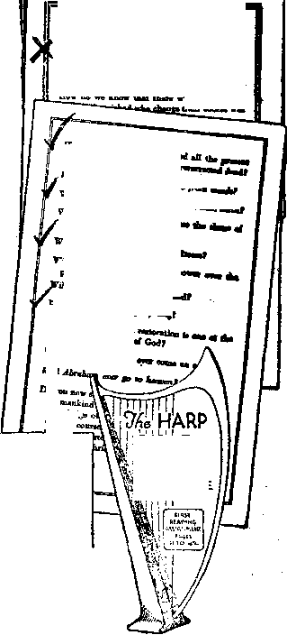

June 21,1922, Vol. Ill, Na 72
ISB Published every other IfSB week at 18 Concord Street, Brooklyn, N. Y„ V. S. A.
Five Cents a Copy—$1.00 a Year
Canada and Foreign Countries. 11.00
Volume 3 WEDNESDAY, JUNE 21, 1822 Number 71
CONTENTS of the GOLDEN AGE
SOCIAL AND EDUCATIONAL
Twenty Thousand Suicides .....................................*..............589
A Protest against the Press ................... 590
FINANCE—COMMERCE—TRANSPORTATION
How the Opium Comes ....5*0
England’s Monopoly of this Deviltry ______
England's Side Partner ... 588
Tub Golden Age, a Sailor’s Viewpoint ..............590
POLITICAL—DOMESTIC AND FOREIGN
One of the Blessings of War ................... ........
Not like Raymond Street ..... .
SCIENCE AND INVENTION The Glory of the Winter Sky ......... -.......—
HOME AND HEALTH
Habit-Forming Drugs in
America .........................579
Tons of Morphine Used 579
Effects of the Drugs ........580
Pandemonium o£ the Mind 581
Agonies of Drug Maniacs 582
Dope-Selling Doctors ........586
Doctors under Indictment 580
The Food We Eat ............695
Park i ng-Ilou se. Frug ali ty 697
RELIGION AND PHILOSOiniY
Symbology, Beautiful
Christian Science versus
Bible Science .. -...602
“Take It by the Tail’1 ....603 Prcjiii of the Gohlen Ago 606 Studies in the "Harp of
God” ................................607
Mblbtcii en<TT other Wedaesdiy at 18 ConeoM Street. Brooklyn, N. Y.f . . . . V. 6- A by WOODWORTH, HUDGINGS and MARTIN CLAYTON J. WOODWORTH.......Editor
flOBRKT J. MARTIN .... Business Managsr WM. F. HEDGINGS......Bec'y and Trea®,
Cnpartuera and proprietors, Addrest: 18 Concord Blroet, Brooklyn, N. T......U. S." A.
Five Cents a Copt — S1.00 a Year foreign offices : British; 34 Craven Terrace, Lancaster Gate, London W. 2; Canadian: 270 Dundas St. W., Toronto, Ontario ; Australasian : 495 Collins St. Melbourne, Australia, Make remittances to Ths Golden Entered M roeond-dut natter at Brooklyn, K. X ntfer the Act of Mircb 3, 1879.
Volume III Brooklyn, N. Y., Wednesday, June zl, 1922 Number 71
OPIUM, morphine and heroin, all derived from the opium poppy; hashish, or canni-bus indica, derived from hemp; cocaine, derived from the coca leaf; and the drugs chloral, ether, arsenic, trional, sulfonal, veronal and paraldehyde, a-re said to have 2,000,000 addicts in the United States, and the number is growing by leaps and hounds.
Drugs addicts are irresponsible. The hold which habit-forming drugs have upon their victims is such that they will stop at nothing to obtain the $5 to $8 per day which they must have in order satisfy their horrible cravings. Of nineteen persons arrested in Boston at one time for violation of the narcotic law a careful oversight was kept for one year. During that time, one was convicted of murder in the second degree, one of robbery, and seven each served six months’ time in prison. At the end of the second year, all but two of the nineteen were serving prison sentences; and those two had been but just released from a penal institution. The police reports of the city of Boston for the years 1919-1920 show 172 arrests in 1919 for violation of drug law's, and 304 arrests in 1920.
IKING the first ten months of 1919, the United States imported 250 tons of crude
opium, enough to produce 35 tons of morphine. One ton would be sufficient for the medical needs of America from Alaska to Patagonia. The combined population of Germany, France, and Italy is 133,000,000 and that of the United States is 105,000,000; yet the United States imported ten times more crude opium than those other three countries together.
There is something about the atmospheric conditions of the North American continent that makes it impossible for the natives to do things by halves. There is a tang to the air that makes their rushes in any direction almost irresisti- ; ble. This has long been known by students of j American conditions. It was these rushes that \ so quickly broke the German lines in the Ar- ! gonne when the America^ troops got under way. ' Just at present many of the American people are rushing to ruin by the drug route.
The United States today is in far graver danger of ruin from opium than is China. This ■ country is using more opium than is China, and the use of that drug is spreading far more rap- ; idly than it has ever spread in China, after that heathen country was forced to accept importations of it at the muzzle of Christian England’s cannons. The same crowd of capitalists that caused the forcing of opium upon China is now engaged in demoralizing the United States by ' the same means. i
“Pop, what is this white powder the kids are buying and selling? They say it is great jazz medicine,” was the first inkling that one citizen ; of New York had that the opium curse is spread- j ing like w ildfire among even the school children. In the nine months preceding October, 1921, in the city of New York, the arrests for drug using and unlawful selling numbered 2,488, of which nine wrere children from twelve to fourteen years of age. All nine of these were engaged ; in selling the drugs to other children. It is claim- ; ed that there are 400,000 drug addicts in New York city alone. It is estimated that in Fort i Worth, Texas, one person in every hundred in the city is a drug addict.
THE most horrible of all the horrible features i of this accursed monopoly of the British gov- : eminent is the fascination that one drug addict ■ finds in fastening the habit on another. In nu- ; morons instances mothers make addicts of theix children. In one family, where both the fathex ;
- and the mother were addicts and dope-peddlers, ' four children, ranging in ages from a baby of r »two years to a child of twelve years, were all drug addicts. An Italian dope-peddler in New .York had taught his eight-year-old stepson to use heroin.
Dr. Simon, head of the New York Narcotic ■ Squad, reports the case of a girl addicted to yi the use of drugs that was made so by her chum, who could no longer procure the drug cheaply, and hoped, by making her room-mate an addict, to procure the drug at lower cost. Here is another of the horrible features of the business that is presided over by the political side-partner of the Church of England. The risks of sell-■ ing the drug are so great that the dope-peddlers raise the price as soon as they are convinced . that the user has become a confirmed addict.
A policewoman of New York remarks that, in addition to the contamination of others so ■ that assistance may be had in gaining even for a little time the benefit of a lower price, there is a moral lechery in the minds of addicts which : makes them wish to ruin others. She says on this subject:
“It is a marked peculiarity of the addict. Nearly • every one of them, after reaching a certain stage, finds complete satisfaction only in fastening the habit on some one else. And oftentimes the victim is a friend or loved one.”
So true is this that the dope-peddlers have a saying that “every new hop-head is good for six more hops.” These men, mostly addicts themselves, display the ingenuity of the devil in creating drug users, so as to widen and increase their business. They deliberately tempt the victim, frequently some young girl or boy, offer-y ing a box of heroin to snuff, passing it around at a party, in the certain knowledge that when . tire habit is acquired here is another human being that will stop at no crime to get the daily supply of $5 to $8 worth of the drug of which they would be denied altogether were it not for that beneficent trading organization reigned •r over by King George V, “by the grace of God.”
What with the Lackawanna and Lehigh Valley and Reading Coal Companies ruling over America’s coal deposits “by the grace of God,” and selling coal at $10 to $13 per ton which actually cost them about $2 per ton, and the ' British empire reigning over the dope business “by the grace of God,” it makes an honest man eager to get such a god (2 Corinthians 4:4) by the back of the neck and “shake the stuffing out of him.” And, indeed, that is just what is happening. Satan is even now being bound, and his house broken up, preparatory to a better day.
OR information as to how the United States secures its supply of opium we are indebted to a good man, Charles N. Lathrop, secretary of the Social Service Department of the Episcopal Church. Mr. Lathrop does not see that the British empire is part of Satan’s empire, and that the church which officially supports and cooperates with that empire cannot possibly therefore be God’s true church ; but he does see some salient facts which we reproduce:
“How is the opium consumed in the United States secured? I find that the Secretary of State ascertains through the United States Public Health Service the amount of opium desired by the pharmaceutical companies. He then sends a statement of this desired amount to the British government, which controls the output of opium; and the amount is sent to this country from England. In this manner we import 640,000 pounds of crude opium annually, which amounts to 50 grains for each person in the United States. Incidentally it is important to note that no other civilized country imports more than three grains per capita.”
It goes without saying that in bowing down before the big business interests that are manufacturing opiates in this country under the high-sounding mime of “pharmaceutical companies” the United States is showing exactly the same spirit that is shown by the husband of the Church of England in bowing down before the big business interests that raise the crude opium in India and turn it loose to ravage the world.
Effects of the Drugs
WE HAVE before alluded to the fact that drug addicts become criminals. Statistics of the New York Drug Squad prove that 65 percent of all the addicts become such; and the percentage increases as the price of the drug increases, directly owing to the fact that the addict will risk his life and risk his soul rather than be deprived of what he has come to feel cannot be done without. In other words, his will is weakened to the point where he cannot resist temptation. In Oklahoma a man gave a hashish cigarette to a police officer, putting the policeman to sleep and allowing some of the prisoners in the jail to escape. This is merely a sample of the cleverness the addicts exhibit in outmaneu-vering the apostles of the law.
The most devilish of all drugs is heroin, the drug that is specially used to lure girls from the path of virtue. It has the property of producing temporary sex insanity, but is later followed by complete sei atrophy, the pitiable condition of millions of British subjects in India—directly due to Britain’s policy of subjugating them by opium.
Heroin is the drug that was used in forming among schoolboys and schoolgirls the secret society recently exposed in the press. Thousands of boys and girls were initiated into this society; and thereafter boys and girls displayed badges openly, pinned upon their breasts or coat lapels, thus signifying their right to approach others wearing similar badges, or to be approached by them, for sex purposes. In one New England town 20,000 boys and girls, so a reputable Christian physician tells us, were found wearing these badges before the police discovered their significance; and the badges were selling so rapidly that the makers could hardly keep pace with the orders.
Nor are the dainty cigarettes in their dainty cases as mild and innocent as our cigarette-smoking young ladies would have us believe. They have in their mixture a poison called furfural, the “kick” from which is equal to two ounces of whiskey to every cigarette. This not only increases the desire for cigarettes, but makes confirmed “dope” addicts of their users. Thousands of young girls in cities and small towns have the habit, and the menace among high school girls is an ever increasing problem. With a biain-drugged consciousness at a time in life when the young maiden needs to have her mind exercised to the highest moral standards, with no sense of duty to God or man, and often free from the uplifting influence of home and parents, she becomes an easy victim for the downward path, the end whereof is in plain sight.
The three drugs in most general use among addicts are heroin, morphine, and cocaine, in the order named, the first two coming from the opium poppy. Opium itself is a brownish substance, resembling hardened molasses. Hashish, an extract of hemp, is about the consistency of syrup, dark green in color, bitter in taste and sometimes sold in the form of cigarettes. Its effects are even worse than those of opium. Other forms of “dope” are mentioned in the opening paragraph of this article. They have various effects, depending upon strength, mixture and the individual using them. One eighth of a grain of “dope” will put a normal person to sleep for many hours; while addicts use from 15 to 30 grains a day, the average addict uses about an ounce a month.
De Quincy’s “Confessions of an Opium-Eater” has long been a classic on the subject of the opium user’s sufferings; and we quote a few sentences:
“The worst pandemonium which those who indulge in opium suffer, is that of the mind. Opium retains at _ all times its power of exciting the imagination, provided sufficient doses are taken; but when it has been, continued so long as to bring disease upon the consti- ■ tution, the pleasurable feelings wear away, and are sue- ■ ceeded by others of a very different kind. Instead of disposing the mind to be happy, it acts upon it like the spell of a demon, and calls up phantoms of horror " and disgust. The fancy, still as powerful, changes its direction. Formerly it clothed all objects with the light of heaven—now it invests them with the attributes of i | hell. Goblins, spectres, and every kind of distempered '] vision haunt the mind, peopling it with dreary and re- 1 volting imagery. The sleep is no longer cheered with j, its former sights of happiness. Frightful dreams usurp S their place, till at last the person becomes the victim of an almost perpetual misery.”
ever to realize what he believes possible, and feels to be
lies under a world’s weight of incubus and nightmare;
he lies in sight of all that he would fain perform; just | as a man forcibly confined to his bed by the mortal । languor of paralysis, who is compelled to witness injury | or outrage offered to some object of his ten derest love: c’i he would lay down his life if he might but rise and j walk; but he is powerless as an infant, and cannot so [ much as make an effort to move.”
A more modern picture of a morphine user’s ! suffering is given in the New York Evening 1 Journal of April 30, 1921. It is the story of a । most unfortunate and most unhappy woman. | We will let her tell her story in her own lan- | guage: j
“Some years ago while suffering from a severe illness 1 I contracted the drug habit—morphine habit. No one in I the world could have been more horrified or shocked than I was when I discovered that I was addicted to
ne QOLDEN AQE
583
morphine. I am a widow with a little family to care for. ... . I had always looked upon people who were the victims of habits as weak, unworthy, unstable persons who enjoyed their habits, otherwise they would not persist in the same.
“The horror of it all dawned upon me one week-end • when I had felt that I must cease taking the medicine, as I needed it no longer. I went to my home without my usual supply, and was far away from where I procured it. And what was my great surprise to find that I was stricken almost helpless and suffering the tortures of hell, or worse, really, for want of my medicine. I could not believe it—that I, the strong-willed scoffer at other people’s habits, was myself the victim of a habit. What I suffered I never can tell you; or how I lived through the week-end until I could get to the source . of my supply and fall in the door of the drug store in a state of collapse more dead than alive from the sudden deprivation of my usual dose of medicine.
“I went to the physician who had prescribed it, and o® my knees begged him to cure me. He honestly told me that no cure had ever been found for morphine addiction, and that the only thing he could do was to . . . keep me apparently normal by supplying my needs physically for the drug.
“I would not believe it. I was determined to find a cure. I waited until my vacation, taking in the meantime just as little of the drug as would keep me mentally and physically balanced. For without it I could do no work, was a nervous shaking wreck that could not ap-' pear even decently before my employer and business companions.
“So to keep in the semblance of normality I had to take it until I could find help. At vacation time I walked.from one end of the city to the other, in and ■ . out of physicians’ offices, begging for a cure. I was laughed at, taunted, sneered at, called a 'dope fiend’ and almost thrown out of reputable, high-class physicians’ offices who would not and could not help me. I made up my mind to cease of my own accord. I tried it. ; I went without it until I fell on the streets; I was taken to my home, nearly collapsed entirely with a heart attack from the sudden withdrawal of the drug, and the physician who was called by my family saw the situation and gave me morphine to steady me for the time being; and for many days I lay too weak to care what \ could happen to me, weak but glad to be normal again, as I could only be under the influence of the drug of my addiction.”
Morphine, after a few doses, produces loss of appetite, headaches, and general dullness. Ideas of duty and of right relations to others become obscure. The margin between truth and falsehood becomes more and more cloudy. The power of analysis disappears. The brain does not receive accurate information; it can no longer
Bbookltn, N. T<
•S
discriminate and act wisely. It forgets to carry out promises; it is suspicious, credulous, full of intrigue and deception. Most users of morphine die in ten years, while others live on a little longer, if there are breaks in its use; but fifteen years is about the limit.
Cocaine is even more dangerous than morphine, and indeed is the most dangerous of all drugs. Once it has become a habit, permanent cures are almost unknown. A dose causes exhilaration, mental activity, and a general sense of well-being. After the effects have worn off depression follows. Then another does is necessary, and another and still another. When the system will stand no more the victim falls insensible, or becomes hysterical. It acts upon the heart, stimulates the brain, pain and distress disappear; and the cocainist is at rest. When denied the drug the victim is excitable, melancholy, worried, unable to sleep and generally miserable; and if he is unable to procure the cocaine will resort to any drug procurable for relief. But with the cocaino-maniacs there is no substitute for the drug. They are literally crazy until they can procure it.
THE agonies of drug maniacs when their supply is exhausted passes the power of human speech to describe. Household furniture has been hastily sold at two cents on the dollar of valuation just before the expected visit of the dope-peddler. Demons appear before the eyes. At a convention of the California Anti-Narcotic League held in Los Angeles two women, in tears, told of their horrible sufferings when they began to do without the drugs to which they , were addicted; and another fell to the floor in a faint when she began to try to put it in words. In another instance the mere thinking of what she had suffered caused one woman to faint and fall into a profound coma.
While this article was in preparation a visit was made to the office of Dr. Simon, head of the New York Narcotic Squad. The Doctor de- -scribed the appearance of addicts and showed : pictures of men and women before and after their deterioration. Sad indeed were the changes revealed. The drugs had done their deadly work, and there was change enough wrought in some of the faces in a period of three years to mar the countenance so completely that they were
scarcely recognizable as the same individuals. He said:
“In the user of morphine the pupils are contracted; in the user of cocaine arid heroin the pupils are dilated. If one starts to question an addict a small, bead-like perspiration will break out on the upper lip. When they have the desire for the drug, the ‘yen’, they travel at a very rapid pace. After they have procured the drug they still travel at a very rapid pace, with one hand in the coat pocket, holding the drug, and ready to scatter it to the winds or into a pool if a detective happens along. A detective can tell from the appearance and movements of an addict when he is> on the way for his drug.”
“There is nothing in criminal history more alienating, more socially deteriorating, more damning or more malignant than narcotic drugs.
“A man may take a drink of whiskey daily for ten days and not emerge a drunkard. But a man who takes narcotics daily for ten days, unless he be suffering from a particular disease, will become a drug addict.
“There is no man but will, through the slavery of drugs, slowly but surely, and ultimately, be in the gutter.
“A drug like cocaine produces mental changes that will make a thief, or possibly a murderer. With varied hallucinations, delusions or mental aberrations, it is not remarkable that the arrant coward under its influence may become a desperado.
“Narcotic drugs suck the soul into the very depths of hell.”
“The cure of drug addicts is adequate, but not ideal. Colonies should be organized where drug addicts can be taken after they leave the institutional hospitals. The reason that many of them go back is that they are usually down to their last cent. They have used their last penny for drugs; they are without work, sometimes without clothes, except the few rags which are often insufficient to cover them. No provision being made for them after they leave the hospital, they are tempted to return to their old environment; and when they do, they are almost certain to return to a use of the drug.
“An addict is medically cured in a week or ten days; that is, he has no further bodily need for the drug. But the mental craving for it persists. The drug addict must be spiritually built up. Their desire for cure must come from the heart. There is where the real cure must come; and there is where there is a great need for welfare bodies who will secure positions for addicts on farms or camps where they are away from the old environment until they can overcome the mental craving for the drug.”
“Most of the drug addicts have mentally and morally deteriorated. We have had bank presidents go to the gutter from the use of drugs. The addicts sacrifice food to such *n extent in order to satisfy their cravings that when they take the drug cure they not infrequently gain thirty to eighty pounds of flesh in one week.”
OT only does the United States through its highest officials bargain direct with the f
Holy British Umpire for thirty-five times as t much opium as this country could possibly take | care of legitimately, and thus becomes particeps | criminis (partner in crime) in the ruin of myr- J iads of its citizens, to satisfy the pharmaceutical > pirates of big business, but there is an immense | and unknown additional amount smuggled into ? the country by underground routes. j
There are various distributing centers for the J illicit traffic. One ring operates from Montreal f through the Northeast and in New York city; ; another works in central Canada and the lake i cities to Kansas City, Mo.; while San Fran- ; cisco is a well-known western center, and ac- I tivities are increased in Philadelphia as efforts j are made to put down the evil in New York. J
The profits of the smugglers are enormous^— ; very much more than when their goods are ob- i tained through the regular pharmaceutical chan- i nels; for big business does not readily let go i of large profits in any business where largo J profit are to be made. A smuggler can buy j narcotics in Europe for $3 an ounce and sell 1 them in the United States for $12 an ounce; and ■ by adulterating the drugs, as is often done, f these immense profits can be increased from 300 j percent to 1,000 percent. I
Ingenious methods are contrived by these ; agents of Beelzebub for smuggling dope into the J country. Revenue agents recently confiscated = two teddy bears, and found them filled with ; “dope” worth hundreds of dollars. An Italian J gentleman, recently given a seven-year ride to J Sing Sing for his proficiency, had an artificial ; left arm, which was hollow from the wrist to the i elbow. In the wrist was a small door with a ‘ spring, which he could open for the removal of > packages of cocaine. There were two compart- ; ments in the arm, one containing ten packages and the other twenty packages. ' j
In the lower part of a platform scale in a j Bowery restaurant $1,000 worth of the drugs } were found by the police. A supply was found ! hidden in a bird-cage which was taken from off ; a vessel in Brooklyn. Seamen and others aboard i freighters coming from China, Germany, and j Italy have been detected bringing in quantities.
A woman peddler hid in the collar of her dog, i which always accompanied her on her walks, ( the drugs which she dispensed to her customers. j
Inmates of the penitentiary onBlackwell’sIsland " ’Were supplied with drugs by heroin and morphine pressed into letter paper with a hot iron. The prisoner chewed the paper, and thus obtained his drug.
i Z"\NE of the peddlers discovered in New York had a route as definite as that of a milkman.
i Beginning at six every morning he made his ! rounds of fashionable apartment houses, leaving : three decks of cocaine here, a phial of morphine ■ there, half a dozen decks of heroin at the next
: place. Sometimes, his books showed, he was
called on to supply additional opium or heroin ; for a party, just as a caterer might supply din-= ners for a wedding. On several occasions he ’' supplied experts to cook opium for a patron who wanted to treat his guests to a smoke.
: At examination time the peddlers hang around
j high schools, where nervous children are unstrung by the fear of failure in the arduous and useless examinations. Just at the time when the tension is at the maximum the peddler comes along with his heroin and cocaine in a'"Closed automobile; and the children buy, even though ' ‘ tire dope-peddlers know in advance that the sure i end is a horrible death within about ten years. , Boys are often hired as watchers for dopepeddlers, and later become addicts and peddlers themselves. Soothing syrups for babies constitute a common form by which the habit is in-y. culcated without the victim being aware. Rich i and poor, sages and knaves, from every walk of life they come, and from every grade of mentality, to become slaves, to be ruined.
Doctor Simon’s lieutenant, Mr. Donoghue, de- scribing the difficulty attendant upon the appre-, hension of a dope-peddler, said:
Y “Someone will call up here and tell us that they are ■ peddling such and such a drug at such and such a corner, w . and ask us why we do not arrest them. Why? Because we have to buy the drug from a peddler before we can convict him, for the reason that no court will take the y word of an addict who might be called as a witness. So , the members of the police force are compelled to act as i ■ addicts and actually purchase the drug themselves.
“The detective makes up as an addict. [The writer saw a photograph of one of these makeups that was per-•- feet, and turning around he beheld the detective himself. No one would have recognized him for the same
' individual, I am sure.] He hangs around with a gang of addicts until he can learn from them where to purchase the drug. Often the addict is suspicious; but when he is reassured, he will tell where to get the drug. Tho peddler is approached and asked for a ‘deck of C’ or s ‘deck of H,’ or whatever drug he wants. The dope-peddler, too, is skeptical and often holds out for several days before he will sell the drug. Finally he asks to see the money. He takes enough to cover the cost of the amount to be purchased and then tells the detective, disguised as an addict, to meet him at a point several blocks beyond where the sale was contracted. While the ‘addict’ is waiting, someone, often not the person who made the sale, will come along, slip something into his hand, and is off.”
The Drug-Boosters
/Commissioner Simon is calling attention to a 'o' new type of criminal, the drug-booster. Sometimes it is a man, but often a woman. The drug-booster is merely an advance agent; he does not carry the drug with him, but merely informs the drug addict where to get the drug and the drug vendor where a sale can be made. Thus he receives a double commission, one from the vendor and one from the purchaser. This business he finds highly profitable and somewhat safer than selling the drug outright, as it is difficult to convict the drug-booster. The addict will not testify against the one who makes it possible for him to get his drug; for he looks forward to the time when he is free again to buy his dope. How the drug-booster makes new addicts is told by the New York Times of November 27,1921. We quote from that paper as follows:
“The narcotic division finds the ‘drug-booster’ in all sorts of places, but recently he or she has been frequenting the white light district. In Broadway restaurants and dance places, from ‘ham-and’ joints to the most expensive lobster palaces, this agent is doing a profitable business. Often he is found at a table, and sometimes through introductions, sometimes through girls who are working for him, suggests to his intended customer a midnight party somewhere, promising something unusual or ‘bohemian’ in this party. A promise of some bootleg whiskey is often the bait; a place where sure tips on the races can be obtained is another glittering attraction offered. Sometimes when the booster feels it is safe he promises his new-found friend a real ‘dope’ party, at which they will be merely witnesses, not touching the drug themselves at all.
“Then from the restaurant the party, with two or three prospective and unwitting customers, goes to a room somewhere in the vicinity. If the party is supposed to be ‘bohemian’ the room may be on the lower East Side, and the now crowd is introduced to those who have the stuff. They are treated to an exhibition of ‘hop’ smoking, and watch the effect.
“Then the time is ripe to get them. They are asked to ‘try it once just to see what it is like’, and often they do. Perhaps the effects are not as wonderful as they are anticipated to be; but generally on another night they allow themselves to be persuaded to try another pipe to sec if the second may not go better than the first, and then the curious pleasure-seeker is almost surely hooked. Before he knows it drug-taking is a pleasure to him, and then a necessity ; and another drug addict is made.”
The Xew York A merican, in its issue of March 19, 1922, gives additional information on the same subject, saying of this latest advent in the criminal field:
“Sometimes he distributes free samples, sometimes he enslaves a number of girls and spreads the habit through them all over a factory or store. He and his assistants work on a commission basis. He is the successor to the cadet or procurer of the white-slave traffic; for he finds he can use girls more profitably in peddling drugs than in other forms of vice. Recently Hr. Simon has found school children engaged in this practice. One of the women referred to above had a large clientele in fashionable hotels and made a specialty of boosting ihe drug among college students.
“Dance hall habitues number many drug-boosters; others pose as chorus girls. If their customers are of the higher planes of society they seldom fall within the clutches of the police, because there is enough money available to buy the drug without resorting to crime.”
THERE has been circulated widely the theory that the increased use of drugs in the United States since the World War is due to prohibition. While this theory may contain a measure of truth, it is discounted by the fact that the increase in consumption of drugs and narcotics is just as great in European countries, where there is no limitation on beverages, and by the further fact that the majority of drug addicts were not previously users of alcohol. Colonel 0. G. Forrer, Administrative Assistant in the narcotic division of the Treasury Department, denying that prohibition is the cause, says:
“The truth is, that victims of the drug habit practically in every instance are young men and women, often in their teens. Rarely are they alcholics. The difference between a drug addict and an alcoholic is that the alcoholic, after a ‘'spree’, usually is sorry and, repenting, experiences a period of reform. The drug addict has no such experience. Once a victim there is rarely any cessation. The disease is rarely curable, and even when the body is cured the mental craving continues.”
But there can be no doubt that theWorldWar itself wrought immeasurable havoc. Suffering from cold, hunger, rain-soaked trenches, homesickness, and many other causes, or lingering on beds of pain in hospitals where physicians and attendants were too scarce to give them proper attention and relief, many of our boys sought relief from their ills through narcotic drugs. They were relieved by the hypodermic needle day after day and week after week until, instead of forgetfulness and cure, they were the slaves of a habit a thousandfold worse than the disease or even death itself could have been.
Oue splendid young fellow of our acquaintance, in the full vigor of health, went "over there” to serve his country, leaving here a young wife. While lying in the hospital suffering from shell shock he was constantly given paraldehyde or veronal. "When the war was over he returned to these United States a moral wreck, incapable of earning a living, seeking only his daily portion of "dope”, and has since pawned or sold all of his own possessions and even his wife’s jewelry and furs in order to obtain funds to buy drugs.
We get further light on the damage wrought by drugs,during the World War from a report by Miss Rujaro, for three years with the California State Committee on Readjustment. She said, as reported by the San Francisco Examiner for Octohm- 17, 1920:
“It was part of my duties to meet and help the returning boys who had gone to Siberia to wag,' the so-called ‘war’ in Russia. At first I thought my work would be to aid them in getting back into their old jobs, in straightening out their allotment tangles, and in helping them in a hundred other little ways; but I soon found out there was a more serious help to be offered.
“Sane, patriotic American citizens will scarcely believe it possible—at first I could scarcely believe it myself—that this more serious help was to be the care and cure of narcotic addicts—boys who had gone ‘over there* to the frozen land ‘clean’ and who had come back, not maimed by shot and shell from Bolshevik guns, but torn in nerves, with health shattered, with hope almost gone, because tbvy had fallen victims to an iniquitous ‘drug ring’, the directing heads of which are Americans—I should say American traitors—and whose field ‘workers’ in Siberia were their Jap agents, whose chief employment is to receive ‘exported drugs’ for the purpose of smuggling them back into the United States.
“From many of the boys I learned that it was no uncommon experience to have American manufactured morphine, cocaiiie, and heroin daily offered to them while on duty in Vladivostok and the Russian hinterland.
iJ
r
“Suffering from homesickness, fighting a ‘war* of which they knew neither the aim nor the reason, or idle in camps in the limitless snow wastes, some of the brave lads yielded to the temptation that promised them ‘freedom from worry and care’.
“Those lads came back slaves. There were numbers of them.” . «
Dope-Selling Doctors
rOHE mere fact that the pharmaceutical companies obtain, through the offices of the
United States and British governments, thirty-five times as much opium as America could possibly legitimately consume proves that the medical fraternities which these pharmaceutical companies control have a large responsibility in this matter. Many times they allow their sympathies to get the better of their sense when dealing with patients who are suffering from painful diseases, and it is an easy matter by dealing out dope of one kind or another to fasten a habit upon an innocent victim before either the doctor or the victim is aware of what is transpiring. Dr. Blair, writing in the New York Survey makes the following charges:
“After thirty years of medical practice, it comes as a distinct shock to be obliged to admit that the narcotic evil must be largely laid at the feet of my own profession.
“The writer has figured the matter up' and down, across aud back again; he has estimated available supplies and where they go in regular trade; lie is in a position to know with fair accuracy how much narcotic drugs are used in professional channels; he has investigated intimately the industrial situation, and he has visited the large proprietary medicine plants throughout the Union. The result is that he is, with infinite regret, compelled to admit that the dope-selling professional man is the main narcotic menace in this country.
“There are pedlers of narcotic in all of our large cities and in some of the smaller ones; but there are dopeselling professional men in nearly every community, and in the aggregate they vastly outnumber the peddlers.
“The narcotic laws must be enforced in the full recognition of the fact that professional people are responsible for a large proportion of drug addiction. The great body of ethical and capable professional people must join in the crusade against the physician, dentist, or druggist who is catering to narcotic addiction. They owe it to the public to do so. and they owe it to the professions of which they are members to run to earth the degenerates therein who are trafficking in human weakness and vicious habits.
“There are several classes of medical dope-sellers. The most troublesome and the most hopeless one is the medical man or woman who is addicted to the personal use of large quantities of narcotics and who is gradually going down the slope. There are many, many such, and they are found among the high and the low in professional circles.
“Then there is the obsessed, ignorant, and often very sympathetic dope doctor who can’t say ‘No’ to the patients who want narcotics constantly prescribed. . . . He reports every case of addiction as one of disease other than addiction. The last class of medical dope-seller or commercial dope-doctor is frankly vicious. He is rarely a narcotic addict himself, and is in the game for the money he can make out of it.’*
TAISPATCHES report that thirty-five physicians of Chicago were under indictment at one time for furnishing ‘snow* and other drugs to victims, and that some of them have grown rich in the business in a very brief time. One of these men had 600 ‘patients’ visiting him two or three times a week, netting him about $6,000 per week clear profit.
Conditions in this respect are very serious in and about Boston also, as evidenced in the following from the New York American of January 8, 1922:
“Assistant District Attorney Charles W. Blood is engaged in assembling an amazing mass of startling information of orgies and immoralities involving the names of many prominent young physicians and business men of Woburn, Medford, Malden, Everett, and other towns near Boston.
“Women whose lives have been ruined, and who have been induced with Satanic campaigning to indulge in narcotics, have fairly tumbled into the prosecutor’s office to narrate the sordid details of the diabolic manner in which they were enslaved to the unscrupulous doctors who turned their professional knowledge to corrupt purposes.
“Enough has already been disclosed to justify the authorities in their charge that a certain group of professional men have been engaged in a nefarious Society of Indulgence that preyed on moral girls and enervated them through drugs so that morality would succumb to immorality. Girls in their teens, others just attaining womanhood, matrons with unblemished records, have been snared into the iniquitous net on their visits to doctors as palients; have been induced through infatuation for some member of the ring to indulge in their gay parties, and have with carefully planned cunning been led from one surreptitious step to another until they have entirely forsaken the upright teachings of their homes and have entered with full vehemence into the orgiastic sordidness planned for them.”
Dr. T. D. Crothers, Professor of Mental and Nervous Diseases in the New York School of
Clinical Medicine, in his book “Morphinism”, writing to his brother physicians, says:
“Institutions which claim to be hospitals or sanatoriums in many instances depend largely on the secret or open use of this drug for all forms of diseases under their care. There can be no doubt that in this way much of the morphinism comes from its surreptitious use by dishonest, unprincipled persons. Careful study of morphinism shows that one-fourth of the cases have contracted morphine addiction from curiosity or association. Of the remainder, a large percentage are undoubtedly first due to its reckless use by ignorant and unskilled persons, as well as by physicians. This is clearly evidenced from the fact that a large number of physicians, and many others, do not understand the danger from the use of morphin by the needle. As physicians, they are taught to prescribe it for transitory and other pains, with little thought of any possible dangers from its continuous use.
“No doubt irresponsible and irregular doctors contribute very largely to the spread of this addiction. The custom a few years ago 6? teaching patients to use the needle and furnishing them with the drug to relieve states of neuralgia, and unexpected pain paroxysms was .very dangerous. This practice undoubtedly made many morphin victims. Foolish physicians who thought the whole province of medicine was to relieve pain under all circumstances, and who used morphin in a routine way, have made many victims of this class. Many quack medicines for the relief of pain contain morphine; and when this is discovered the purchaser buys the drug direct, and its use is continued.”
At one time an effort was made in New York to assist the so-called medical addicts, who acquired the habit innocently because of some painful disease, such as gall-stones or cancer. This was done by providing them with certificates so that they could daily procure the drug, in ever decreasing doses. These prescription certificates were provided for their own protection, so that if found with the drug on their person they would not be subject to arrest. But it was found that the effects of the drugs so lowered their moral sensibilities that they used the certificates to protect themselves while they procured the drugs from dope-peddlers in much larger quantities than the certificates called for. Hence the registration of all addicts was made necessary.
In the Vice Business
THE patent medicine manufacturers and the drug stores are great sinners in this matter. The patent medicines contain “dope” in an adulterated form, and through this means a constant user of patent medicine often becomes an addict without realizing it. He simply knows that he cannot get along without his “medicine.” The drug addict mentioned in this article as having acquired the paraldehyde habit in France has no difficulty in procuring paraldehyde or veronal. He goes into any drug store in any city where he happens to be and procures his drug without the least difficulty. Paraldehyde and veronal lead to the use of the more deadly drugs, heroin, morphine, and cocaine; and he may by now be an addict to one of these.
England’s Monopoly of This Deviltry
NGLAND has a monoply of this devil’s business of drugging the world with opium. The natives of India are encouraged to grow the accursed poppy, and are loaned money without interest if they will engage in it. There is big money back of the industry,as well as big money in it for the British Empire—the two-horned beast of Revelation. “Wherever drugs are confiscated,” says Commissioner Simon, “there is found a trail that leads to a ring that is international in character and has the backing of great wealth.” Peddlers and venders of these drugs always are able to get bail when arrested, no matter how large may b(; the amount fixed.*
The Boston District Attorney, discussing this subject, says:
“The fact seems to be that the British government is responsible for the largo quantity of opium flooding the world today. The cultivation of the poppy is fostered by the government; manufactured into opium in the government factory, at Ghazipur, and into morphine by British firms in London and Edinburgh; and sent out into the world through trade channels—illegal and otherwise.
“When manufactured, the opium is disposed of in three ways as follows:—a certain amount is reserved for Indian consumption and handed over to the Excise Department; another portion, styled ‘medical opium’ is sent to London, and the remainder is sold at monthly sales at Calcutta. Most of this Calcutta-sold opium finds its way to China eventually. The revenue to the government for the year 1905-6 w*as nearly $22,000,000 net from this ‘monopoly’ as the blue book referred to calls it. After the opium is thus auctioned, England as a government is no longer concerned.
“A study of England’s colonies and dependencies and foreign concessions shows that the opium trade is the source of very great Colonial revenue, often reaching the proportion of one-half the entire amount. The Straits Settlements in 1917 had a total revenue of $19,672,104 of which $9,182,000 came from opium traffic. Hong Kong in 1917 derived one-third of its revenue from
opium. India, the source and fount of the opium trade, » derives its revenue from many sources; but two of them
—opium and excise—concern us. Excise duties are collected exclusively on spirits, beer, opium and intoxicating drugs. For 1916-1917, the total revenue was 118,799,968 pounds sterling, and the revenue from opium and excise amounted to 12,375,904 pounds sterling. During ten years, ending 1916-17 the net receipts from excise duties increased 47 percent and opium receipts 44 percent. The revenue from other drugs (excluding opium) increased 67 percent. The total revenue of India for the year 1919-20 was £135,5; 0.000, and of this, the amount from opium and liquor was£15,743,100. In the year 1920-21, the total revenue decreased to £134, 825,900, but the revenue from opium and liquor increased to £16, 616,000.”
England’s Side Partner
BUT the United States is a guilty partner in the whole devilish business. The same writer goes on to say that although the government policy of the United States has always been to discourage the opium trade in China; yet it permits a vast quantity of morphine and heroin manufactured by our esteemed “pharmaceutical companies” to be shipped to Japan, knowing that it will be transshipped to China -and sold in the foreign settlements of Shanghai and other Chinese cities in which the sale of opiates is strictly forbidden in the native city, but cannot be prevented in the foreign quarters. All the Chinese addicts have to do is to cross the line into the foreign section to obtain all they wish ; for there was enough of the accursed stuff shipped by our “pharmaceutical companies” from Seattle in five months to give a dose to every one of the 400,000,000 men, women and children of China.
As a consequence the Chinese people an* -ee-.ing through the whole heathenish, hypocritical performance, and are seriously doubting the dictum of our Supreme Court to the effect that the United States is a Christian nation. Japan itself, heathen nation as we know it to be, while it is a large buyer in Calcutta of crude opium find a large buyer in America of manufactured opium, FOR THE CHINESE WHOM IT IS IN PROCESS of subjugating, has no opium shops of its own and protects its people from the dangers of opium by strict laws.
Demons Back of Dope
AFTER reading the evidence accumulating for a couple of years to show the phenomenal increase in drug addiction, one is struck by the fact that an influence more potent than human ingenuity is at work in the earth. For instance, what motive could prompt a “drugbooster,” described above, who is not an addict himself, to persuade others to use the deadly stuff? Is the power for evil in the human heart greater than the power for good? When we consider that six thousand years of degeneracy, when man first fell into sin and began to lose the glorious image of God in which he was originally created, have been insufficient to eradicate the last vestige of uprightness, we are inclined to believe in the power of good. In every human soul we can trace some spark of righteousness. Hough exteriors, calloused consciences and countenances make this less discernible in some; but here and there, when some tender chord is struck, we catch a glimpse of the better self that has now grown too weak to struggle for the mastery. So we look outside the pale of humanity to discover, if possible, the source of such diabolical work.
From the beginning of the world Satan, the prince of devils, has craved complete possession of the human race. To this end he has sought to destroy the mental and moral image of God that was the original gift to mankind. By any means through which reason is dethroned, the will weakened, and the impulses and emotions stirred to their depths, he seeks his prey. From most of the exhilarations the mind is able to recover its balance* and the higher faculties restore some measure of equilibrium, so that not until debauches are so repeated and frequent that the will is entire dethroned is the battle for moral supremacy on the part of the individual a hopeless one.
Associated with him in his realm Satan has a host of demons, “angels which kept not their first estate.” who like himself have defied divine authority and are now engaged in an endeavor to subdue the world of mankind to their own rulership. The all-wise Creator is permitting this reign of evil for the instruction of the human race in the “exceeding sinfulness of sin”; and when it has served His purposes Christ’s reign of righteousness will come in.
And as if to reach the zenith of his power in demoniacal inoculation, the prince of devils has engineered a course for the debauching of the human race that only his genius could contrive. By no better means could he more quickly and more effectually destroy the will power that stands between moral uprightness and degeneracy. In this rapid increase in the use of drugs we see his hand, and from his own realm of demons, through the channel of a medium, we have the confession. In the New York World of March 22, 1920, Mrs. Lambert, spiritist, is quoted:
“The four great divas [princes of the demons] are now in control of the situation, and are closest to the earth plane. The divas are responsible for the awakening of the general desire for too much liberty, in fact they are raising hob with almost everything and everybody, and unless some of the ‘masters’ stop it there will be worse disaster. It is this ‘control’ that is behind Bolshevism and it is also causing a greater tendency to drug addiction, particularly among women. The divas understand they are playing havoc on this ‘plane’ but they are working for future generations, for some reason, and ultimately they will teach these generations that there is a sort of soul intoxication with a stronger kick in it than the best that ever passed over what was once known as a bar.”
But the Lord will “cause the wrath of devils to praise him”; and when iniquity has come to its full our Lord Jesus will “rule the world in righteousness.” And so through the blackness of darkness of sin and despair, we see white hope coming on the wings of the Millennial morning, the Golden Age; and with Whittier we are able to say:
"If for the age to come, this hour Of trial hath vicarious power, And, blest by Thee, our present pain 1 Be Liberty’s eternal gain ■
Thy will be done!
‘‘Strike, Thou the Master, we Thy keys, The anthems of the destinies!
The minor of Thy loftier strain,
Our hearts shall breathe the old refrain, Thy will be done!”
Twenty Thousand Suicides
TWENTY thousand suicides are reported for 1921. Of these, 858 are children; 509 are exsoldiers; and 76 are millionaires. The oldest - person was one hundred years, and the young' est five.
To these the dark cloud had no silver lining. All was murky and hopeless. To any who are discouraged we -would say: Hold on a little longer. Perhaps the worst is yet to come; but the dark night with its coal-black hour must give way to the morning light. The sunrise of a bright new day is now at hand.
- - The day dawns, and the the damnable conditions that produced 20,000 suicides in one year —among them over 800 immature children—is condemned of the Lord and the responsible sys-terns of church and state are doomed to oblivion. In this connection it is truly comforting to know that God is on the side of the poor and oppress
: ed. “His enemies shall lick the dust.”
’ Evildoers and workers of iniquity—inequality in social conditions — are responsible for Sr such conditions; and the blood of these 20,000 suicides, and that of the 20,000,000 killed in the f war, cries from the ground, as did the blood of ► Abel. The world, the flesh and the devil, big business, big politics and big church—must pay the costs. “Let God arise, let his enemies be scattered."
“Thy kingdom come” is the only cure for the By L. D. Barnes world’s complication of diseases; and the kingdom is the only thing that will rid the world of official banditry, and bring life, peace and safety to all. “Millions now living will never die!” Relief is in sight. The time is at hand, the day dawns. Two hundred and fifty thousand radio sets were installed the past year. Construction plans for modern homes make provision for this latest wonder. Landing stations on the house-top for the family airplane that will rise like a bird are suggested.
People will sit in their own homes and get the world news without the aid of “high-jack” newspapers. In the same way they will get moral and religious instructions. Thus the Word of the Lord will go forth from Jerusalem, the world’s future capital. Thus will communicate the world’s mighty princes. A lecture by Moses on the majesty of the law; encouragement from father Abraham and from Job; good words from Daniel, Joseph and Isaiah, and a warning from the lofty Malachi, will be the chief items of the day.
Glorious time foretold by these and others of the holy prophets, now at hand! What grand possibilities! "What cause for rejoicing, as the resurrection intelligence is registered in the billion happy homes. WTiat cause for thankfulness for the life that now is, though all seems dark—and for the life more abundant to come!
By A. Insberg (On Board S. 8. “Chateau Thierry” En Route from Panama to Honolulu)
"VTOUR magazine, The Golden Age, is very much appreciated on this vessel. The issues are read and reread until they are pretty well worn out. While passing from one to another such remarks as these are often heard: “It’s certainly a very interesting magazine”; “Those people have the right dope.” Especially good is the article, “Everlasting Life upon the Earth,” which we would like to see reproduced. The article shows wide scope of learning and keenness of observation by the writer, besides a wonderful knowledge of the Bible.
Whatever topic you take, you seem to treat it thoroughly without favor or partiality and (what’s best) without hypocrisy; and this open-mindedness and invitation to investigation is what we admire.
You have truly an up-to-date exchange of news, while putting yourself in the background and permitting no criticism, however harsh, nor money interests, to swerve you one bit from the . course once taken. Your delight and only concern seems to be that, no matter what personalities are involved, there be truth, nothing but the truth on every subject. Of course nothing can be perfect at present. If we are looking now for wise Solomons, humble and faithful Moseses, or patient Jobs, we are looking for the right thing ahead of time. Perfection of knowledge is a thing of the future. And we may be sure that when those tested to the last for righteousness and truth, those faithful men of old come back again on this earth as perfect human beings, The Golden Age will be published and circulated every where. For is it not written that the law shall go forth out of Zion and the Word of the Lord (instruction in righteousness through wireless, movies, newspapers, and magazines such as The Golden Age) from Jerusalem?—Isaiah 2: 3.
Under the protection of that blessed kingdom the truth only will prosper. Favored indeed is your portion, his portion, ‘who buys the truth and sells it not’. Yes; and the truth makers one an optimist, too; i. e., he sees the silver lining through the dark clouds shining—he sees the blue above. And such a one would not permit the clouds to mar the beauty of the vision—the vision of the Millennial Canaan, where milk and honey flow. Such a one lives for the future, and takes his happy view from the standpoint of earth’s perfected creation.
And, more than that, you explain the cause of earth’s present miserable condition and the sure remedy for it—the kingdom of God. This all shows -wisdom, as well as a large amount of faith, which very few mortals now possess.
We admire your stand for truth and righteousness and for the liberties and rights of the people. For in lasting contempt and dishonor will be hole 1 anyone who, knowing the right way, at the same time through fear of mortal men fails to show it to the people; or one who through greed or love of earthly honor forsakes the Godgiven privilege of instructing others in the wisdom from on high, which leads to peace and life eternal; or one who sees a great calamity, earthquake or other disaster, coming upon the people and does not warn them in time to escape it, or, knowing the remedy and means of escape, does not make it known to the people. But in everlasting honor, praise, and respect of their fellow men will be held such as see the disaster coming and, knowing that many lives will be lost and also knowing the only way to escape from this disaster, are proclaiming it from the very house-tops, that thus much suffering and bloodshed may be avoided and many lives saved.
For be it known that the warnings and instructions that have thus far proceeded from The Golden Age, that all “seek meekness, seek righteousness” if perchance they may escape the judgments of this day and be able to stand the searching rays of ever-increasing light, are not from man, nor man-directed. They are the' voice of the Almighty, calling upon all to give an account of their stewardship, and to repent, to disassociate themselves from their former wicked ways and “isms” and to “kiss the Son” of Man—make friends with the new incoming King of glory, humbling' themselves before Him. Wise is he who will heed these instructions, who will strive to comply with the golden-iron' rule—the only rule of the incoming kingdom, the rule of love. “He shall be blessed upon the earth.”
May the good work so nobly begun ever continue; and God himself from on high will strengthen you, who arc the truest friends of the people, ever lovingly and fearlessly to announce the heart-cheering news of the incoming Golden Age, which will be so full of blessings that people there will live forever. And since that kingdom now is being established upon the * tarth with great power and glory, therefore it stands to reason that there are millions now living who will see that day and, by embracing the opportunity and by becoming loyal citizens of the kingdom subjecting themselves to its loving arrangements, will live, will never die.
Therefore we would say to you: Courage now! Be strong! Lift up the banner of truth and righteousness before the people! Lift it up; be not afraid! There are millions of hearts ready; and when the day of reckoning comes who knows but that some great surprises will await you!
A WORD FOR SAILORS
Now for a few words in behalf of the class of seafaring men I represent: Following the sea for about fifteen years, I can truly voice their sentiments by saying that if there is any class of people that would welcome the Golden Age from the bottom of their hearts they are the simple, brave, yet much-abused and downtrodden people known as seafaring men. Fighting the elements, facing hardships year in and year out, their hard-earned money taken by the slums and parasites of society, their mental, moral, as well as physical health continually sapped by irregular life on shore and on ship, it is no wonder that the first glimpses of the New Day give to a sailor boy as much joy as the first sight of a light after the storm and fog has cleared away, a sure sign of the nearness of the harbor of rest.
The New Day, with its light and blessings, brought also great changes among the ranks of seamen. The happy-go-lucky and care-for-nothing type has gradually disappeared. Instead have come enlightenment, self-respect, and claims of human rights and liberties. They began to look upon themselves as partners of the blessings of the New Day and refused any longer to be treated as “sea-dogs”, but demanded equal righty with brothers on shore. Unions were organized; and during the World War, thanks to this organization (Eastern, Gulf and Pacific Sailors Association) the conditions of seafaring men were much improved: three watches, better wage-scale, closed shop, better food, and better sanitary conditions lifted up the seagoing vocation to its present respectable place. Society has ceased to treat seafaring men as outcasts, but recognizes them as rightful citizens.
As the “windjammers” and “squareriggers” more and more have disappeared, and with them the click of the “taliet” and hand-windlass, the . modern steamship has come in, and with it have come better days for the sailor. Now, gen- . erally, everything is provided on board, while previously one had to carry with him everything, even sheets and blankets, and a great outfit of working gear, such as needles, dittybags, marlin spikes, etc. The time for reckless self-sacrificing, with hardships untold, which a sailor had to face on early sailing vessels, is gone and gone forever. Society still owes a great debt to those brave and daring seafaring men who not only discovered new lands, and thus brought wealth to their home people, but also through the development of commerce and exchange of ideas have promoted the intercourse of nations and have brought it to its present high state. Commerce, ocean-borne, has been the very life-blood of civilization.
SLIPPING BACK
It is true that at present the wages are going down, because of the poor shipping and hard times on shore, which the ship-owners are taking advantage of. The working conditions are slipping back toward the old standard, all of which makes the seafaring men a dissatisfied class of people; and I have seen them turned out rank radicals by the thousands, with through and through Bolshevik expressions and ideas.
Who is to blame for it? Surely not the lowly, the humble, the sympathetic! for be it known that there are many noble-hearted among the ship-owners who would be glad to recognize the just rights of those who man their ships, and give them a helping hand, but because of the arrogance and the pride of big business (supported by big politicians and big clergy) of which the shipping-trust is a part, who look upon labor as a commodity, the generosity of these men is restrained; and as a result we see the seaman’s life drifting back toward the olden days—the golden days for the master with his slave, only now the whip is the bitter word.
Of course, also, the seamen must be reasonable ; and where it is possible to go half way that cooperation and good-will may prevail, they should do so. But this we cannot expect fully until the glorious Golden Age, the kingdom of God’s dear Son, the kingdom for which all Chris- ' tians have prayed for centuries, “Thy kingdom come”, has been fully brought in. But when the
due time for it to be brought in shall come, the seafaring people will be found very enthusiastic coworkers to bring in the new order.
May God speed the day of deliverance for the lowly and oppressed, and praised be His great Name for the rays of comfort, light and cheer of the new day, the thousand-year day of Christ's kingdom now at hand, also for the many evidences of the end of this dark night of sin and sorrow and death, which for the past six thousand years has been like a terrible nightmare upon humanity. Thanks to the great Creator also that the time is at hand when Satan, the god, the mighty one, of this evil world, will be bound, evil restrained and Christ the Head with His 144,000 body members will arise as the glorious “Sun of R’ghteousness with healing in his beams” scattering light and blessings in all directions. Then every honest heart’s desire will b% satisfied. In that blessed time and under the protection of that kingdom of peace and righteousness, the poor and lowly seafaring man will also find the fulfillment of his heart’s desire, blessings of every description and joys untold; and, greatest favor of all, he will find life eternal amidst perfect conditions. Then there will be no more need of unions; for nobody will be in need, nor compelled to do good, but everybody
Not Like “Raymond Street”
A CORRESPONDENT writes that the Portland, Oregon, city jail is not like the unspeakably filthy, vermin-infested hole provided by big business, big politics and big church in Brooklyn, N. Y., which passes under the name of “Raymond Street Jail.” He says:
“Most jails are filthy places; but the writer has a different opinion of the Portland Oregon, city jail into which he was put with two other Bible students for the Berious crime of distributing free religious literature.
“The jail was quite clean inside, in which respect it contrasted with the men connected with it, who, when putting these, Bible students through the third degree, illegally called them all the filthy names imaginable.
“One could not wish for better beds than were provided, The cells were double-decked, but clean, with toilet, and with a hot and cold shower bath at the end of each cell corridor.
“Bed clothing is sterilized after each prisoner leaves; and if the cleanliness of any prisoner is doubted, he is isolated and his clothes and bed clothing are sterilised in the steam oven.
will be willing and anxious to increase the happiness and joys of others, on the alert to do good unto all.
But you will say: It will require a miracle to change the human heart from stony-heartedness to love and sympathy, and miracles do not happen nowadays. But He who will raise the dead has power enough, we are assured, to perforin all His good promises, through Jesus Christ His blessed Son.—Jeremiah 31:31.
Then, lastly, we are thankful and glad that we have such noble examples among us; those who are fearlessly yet lovingly proclaiming the blessed times at hand, faithful watchers in the watch-tower, who, for the reason of having a broader outlook, are able to see farther, and who to the inquiring ones below are announcing the dawn of the morning, the Millennial morning, tlle Golden Age—those who, like a beacon light in this dark night, are pointing to the only Star of human hope, Christ and His blessed kingdom. And it makes every human heart that has left in it a spark of sincerity leap for joy.
Therefore, dear editors, let the good news go out! You are doing a mighty work; and you have a warm spot in our hearts, especially among the sailors who have read your loving articles. And be assured that whenever we get to Brooklyn we are coining to visit you.
“In the morning, after arising, at 6 A.M., the trusties are taken to the courtyard and given the patrol wagons and automobiles to wash. After breakfast, at 8.30, the corridor floors and all iron gratings and caging are scrubbed with water and antiseptics. This continues until everything is spic and span.
“The jail hospital is done in porcelain wainscoting, with polished cement floor. Each day the trusties scrub the floor and dust the walls and chairs, and the janitor has the privilege, when he desires, to call upon trusties for aid in cleaning, oiling and dusting the furniture in the jail offices, and washing the windews.
“I was in the jail thirty days and aside from the inconvenience of confinement, fully enjoyed the time. After my two or three hours of daily duties were over, the balance of the day was spent in studying and discussing God’s Word. I might add that every prisoner, after sentence is imposed, automatically becomes • trusty, and these trusties all sleep and eat together in one large room, provided with single beds. In this room they could play games and while away the time as they wished.’*
LOOKING- into the southeastern sky on a clear night during the end of Autumn, and in the late part of the evening, and earlier in | the evening during the winter season, we can : see one of the most beautiful stellar sights in
■ all the heavens.
IF There appears in this section of the sky a
? number of constellations having eight or ten of ' the most brilliant stars of the first and second . magnitudes. This group is one of the most ini 1 teresting to the casual observer of the whole year’s display of stars.
: ORION AND BETELGEUSE
' The most prominent constellation is Orion,
which is very easily located and serves as a starting point for locating the stars in this vi-cinifcy. Orion is easily found by observing its elongated diamond-shaped figure, somewhat re' sembling a rocking-beam on a steamboat. The diamond-shaped figure is formed by the bright red star Betelgeuse at the eastern and upper end and by the other bright white star Rigel at the southern lower end and by three sister-stars known as the “Belt” of Orion, crossing the short center-line of the diamond.
A magnificent figure in the shape of a large majestic bow is formed by six of these stars: Starting with the bright bluish-white star Sirius, called the Dog Star, the principal star in the constellation Canis Major and the brightest in all the heavens, which then is closest to the ' horizon directly below Orion in the southeast, we follow an imaginary curved line eastward and upward. Then coming to the next bright white star, Procyon, and following the curve up. ward we next see Pollux, a bright orange star, and a little further on is his neighbor Castor. Following the bow upward toward the zenith we next meet Beta Aurigae, and a little further on the bright yellow star Capella, at the end of the bow, Orion lying almost within the sector of this bow slightly toward the lower end.
Above Orion is located the constellation Taurus, in which is the beautiful soft group of the Pleiades. Alcyone, the principal star of this * group is sometimes referred to as the center of the universe. About half-way between the Plei-' ades and Orion is another bright red star, Al. debaran, the principal star of the Hyades group.
. VARIABLE STARS
When these sign-posts of the heavens once become fixed in the observer’s mind, they will be more and more appreciated and admired, as ’ they are further studied relative to their positions with still other interesting stars. For in- ' stance, directly above this group in the constellation Perseus is the interesting star Algol. This is one of the stars known as a “variable.” In periods of little less than three days it changes from the brightness of a second magnitude star to below that of a third magnitude, giving out only one third as much light at minimum as when at maximum brightness. The cause for its variableness is that this star is a binary, or double star; and the variations are caused when one star passes back of the other, thus reducing the amount of light as compared when they are J side by side. The two component stars of Algol are only two or three million miles apart and cannot be seen separately by the strongest telescope.
In this connection we might mention our familiar North Star, Polaris. This star is also termed a double star, one of the components being a little below the second magnitude and the other about the ninth. The two components are so close together that they appear as one star to the unaided eye, but with a moderate-size telescope they may be seen separately. The brighter star is yellowish, and the faint one white. By means of the spectroscope it was found that the brighter star is actually composed of three : stars so very close together that they cannot be seen separately even with a telescope.
These three bodies of which this star is composed circulate about each other, one of them r being a little brighter than the other two. Thus the North Star is actually composed of a small cluster of four stars.
THE NIGHT THE STARS FELL .
Eastward from Procyon and Pollux is the bright white first magnitude star Regulus, the principal star of the constellation Leo, this ' forming the end of the handle of the “Sickle of : -Leo.” The vicinity of the “Sickle” of Leo ap- J peared to be the radiating point of the great meteoric shower on the night of November 12, ;
1833, known as “the night when the stars fell.” /. This was a very spectacular display. From two < o’clock in the morning of the 13th until daylight, the sky being serene and cloudless, the • heavens all over the western hemisphere seemed to bombard the earth with a barrage of meteors
of large size and brilliancy, which illuminated the atmosphere like a deluge of fire. During these hours the sky literally rained meteors, falling like snow-flakes and producing phosphorescent lines along their course. There were intermingled large fire balls which darted forth at intervals. These left behind luminous trains which remained in view several minutes, and sometimes half an hour or more. One of them seen in North Carolina appeared of larger size and brilliancy than the moon. Some of the luminous bodies were of irregular form, and remained stationary for a considerable time, emitting streams of light. Some were so bright as to be seen in full daylight, during the following morning.
There fell millions of these meteors. One astronomer computed that not fewer than 240,000 were visible at one time above the horizon of Boston. At Niagara Falls the exhibition was especially brilliant, and probably no spectacle so terribly grand and sublime was ever before beheld by man as that of the firmament descending in fiery torrents over the dark and roaring cataract. When accounts were checked up a few days later it was found that no damage was done anywhere.
EFFECTS OF THE METEORIC DISPLAY
A gentleman who was traveling in South Carolina in 1833, describes the effects upon the Negroes of the great meteoric display of that year:
“I was suddenly awakened by the most distressing cries that ever fell upon my ears. Shrieks of horror and cries for mercy I could hear all around. While earnestly listening for the cause, I heard a faint voice close to my door calling for help and saying that the world was on fire. 1 arose and opened the door, when it was difficult to say which excited me the more—the distressing cries of the Negroes or the awfulness of the celestial scene, Upwards of one hundred Negroes lay prostrate on the ground, some speechless with terror, others with their hands raised, crying bitterly and praying for mercy. But the scene above was truly awful; never did rain fall much thicker than the meteors fell that night.”
In that these meteors seemed to emanate from the constellation Leo, the radiating point moving westward with the constellation, indicated that their origin was independent of the earth’s relation and outside of our atmosphere.
This meteoric shower or falling of stars is generally considered as a literal fulfillment of the Bible nronhecy of Matthew 24: 29.
ThirUy-three years later, in 1866, another splendid display took place, and also the two following years on a smaller scale. Meteors emanating from this constellation are termed Leonids.
These meteoric showers and the usual November meteors which we see are generally explained by assuming that swarms of meteors are traveling on an immense orbit which comes into close proximity to that part of the earth’s orbit through which the earth passes during the month of November. The meteors, being more or less scattered all along the path of the meteoric orbit, are more dense or in swarms at intervals.
In the constellation of Orion is found the Great Nebula of Orion. It is situated in the center of the "Sword” of Orion, which lies between the “Belt” and Rigel. This is a vast mass of glowing gas in an irregular form, probably being a solar system in the making, in a very early stage; and it may eventually become a star similar to our sun, with a retinue of planets revolving about it.
GREAT NEBULA OF ORION
In the constellation of Auriga is found one of the hundred or more known star-clusters. Such clusters usually consist of several thousand stars very closely grouped together. They usually cover an area in the sky somewhat smaller than the moon appears to fill. In most clusters the stars are very faint, being generally between the twelfth and sixteenth magnitudes. It is difficult to say whether these are actually small bodies, or whether their faintness is due merely to their great distance from us. One of the finest examples of these clusters is the great globular cluster in the constellation of Hercules. It contains over 5,000 stars, and upon a clear dark night it is visible to the naked eye as a patch of light. In the telescope, however, it is a wonderful object. The heavens in the southern hemisphere seem to he richer in magnificent examples of globular clusters than the northern heavens. For instance in the southern constellation Centaurus there is a cluster containing some 6,000 stars.
A little idea as to the distance some of the stars are from us: Sirius, for instance, is 8| light-years away: Capella 32, and Betelgeuse 150 light-years. By a light-year is meant the distance that light travels in one year at the rate of 186,300 miles a second. This would make the distance to Sirius about 50 trillion miles.
The closest star to us is Alpha Centauri, about 4J light-years or about 25 trillion miles. Some of the farthest stars are estimated to be many thousands of light-years away.
STABS or ENORMOUS SIZE
The size of some of these stars is enormous. Betelgeuse, for instance, which was just recently measured, is approximately 218 million miles in diameter, larger than the orbit of our Earth and almost as large as the! orbit of Mars. Our sun is about 866,000 miles in diameter; it would take about 27 million suns to equal Betelgeuse in volume.
The bright red star Antares in the constellation Scorpio was also recently measured and found to be about 420 million miles in diameter, or about 500 times the diameter of our sun.
Arcturus, the bright orange star in the constellation Bootes, is 19 million miles in diameter. The distance to Arcturus is about 100 lightyears, or 5S6 trillion miles.
Wonderful is the vast expanse of the universe. Astronomers estimate that there are over 375 million of these stars discernible with the best modern telescopes, and they saj»that if we were at the furthermost star and looked still further 1 on we would see as many more and as many more; and so on ad infinitum.
The Food We Eat By Mrs. R. b. Gerskong
WE HEAR a great deal about starving Europe and other countries, but very little <■ about starving America. The Americans are starving, slowly and insidiously, not because of > lack of production, but because of the lack of
; proper, nourishing foods. Our millers reline
’ the grains, and polish the rice to death, so that
i they shall look white. Our canned fruits and
p vegetables and extracts are treated with chemi-
cals until their food values are partly destroyed, k We have several good nature-students and
doctors who have tried to bring about reforms in foods, but their efforts have been squelched by associated M.D.’s, the press, and food profi-f- teers. Little by little the truths come out, and people are gradually getting their eyes opened and slowly learning there is a science in foods. I A few years back our Government passed
pure-food laws. We were lulled to sleep for awhile, thinking all was well that was done by a government “by the people for the people”. The originators of the pure-food laws meant well, but the profiteers have gotten around the . laws until the present situation is a disgrace.
Our nature-students tell us that our soil consists of sixteen elements; that our bodies contain these same sixteen elements; that the r' grains, fruits, and vegetables as they come from the soil contain these elements. Our body is y. made up of cells. These cells are continually breaking down and new ones are built up from i the food we eat. Man is made from the dust. If one food-element is lacking in what he eats, he feels a little out of sorts. The more food
elements are lacking, the sicker and weaker he gets; and when he is once broken down, it is a long, hard trail back to health.
The millers remove many of the sixteen valuable food elements from flour, cereals and rice. The housewife removes valuable minerals from the vegetables when she pours out the water they are boiled in.
Mothers like to see their children healthy and happy, but most of them are ignorant of the conditions of our food supplies.
Alfred McCann, one of our ablest authorities on food science, says that he has given up trying to get food reform through legislation. That sounds bad for a Government “for the people”. He says the reform must come through education. This cannot be done through our schools; for here, too, big business interferes. The only way, then, is through spreading of literature in magazine and book form among the people so that they can learn. Our naturemen’s books and magazines are not advertised enough.
Mothers do not realize that the innocent-looking candies and cookies that our children spend pennies for, are poisonous to the cells and tissues of their bodies. The candies are for the most part made from glucose and cheap colorings. The cookies are from white flour, inferior grades of fats, eggs, sugar, and ether extracts. The sugar we get is refined beyond recognition. We rarely see sugar any more as it comes from nature.
The ice-cream cones our children buy are
made from inferior ingredients, and besides contain a powder to keep them from melting.
We should eat all kinds ’ of fresh fruits. Fruits contain sugar, water, acids, some protein, and are rich in mineral salts. The sugar in fruits is easily digested. It can be eaten in large quantities, and it supplies the body with heat and energy. The sugar we get in fruits and honey is sufficient as far as sweets are concerned. Fruit-acids stimulate the appetite and .promote the flow of digestive juices. Germs cannot live in the presence of fruit-acids.
Fruit-salts are very valuable in building up worn-out tissues. Plums, cherries, strawberries, and currants contain iron valuable in anemic cases. Many people erroneously believe that fruit-acids cause rheumatism; but it is known that fruit-acids in the body are converted into alkalines and are a cure for rheumatism. We have heard that fruit is “gold in the morning, silver at noon, and lead at night”. But we are sure that fruit is gold all the time. The Bible tolls us that in the renewed earth we shall plant vineyards and eat the fruits thereof.
Let us eat coarse breads and cereals; if possible, get a small mill and grind our own grains. Let us eat vegetables, greens such as lettuce, spinach, and chard, green and dry beans, peas, lentils, unpolished rice, honey, and all kinds of fresh fruits. Leave the colored sweets alone, also the dried and canned fruits and vegetables, unless we are sure that they are not chemically treated. Let us eat the things as they come from nature’s great store-house put up anti governed by the Creator’s infallible pure-food laws.
READERS of this journal, who have become familiar with the tactics of much of the i “public” press of America, whose policy has ■ been bought by British international bankers, and some of whose leading newspapers are reported to be owned by London interests, will appreciate the following communication from a ■1 member of The Golden Age staff to a promi-’ nent New York paper:
June 5, 1922.
' New York Herald,
* New York, N. Y.
' Gentlemen: .:4 '
The following item appeared in yesterday’s New York Herald and has been copied widely J in other papers :
■ “END OF WORLD NOT POPULAR IN VIENNA
’ "communists rush platform and stop
■ U. S. PROPAGANDIST
, “Special Cable to The New York Herald.
, “Copyright, 1922, by The New York Herald.
3, “Vienna, June 3.—J. F. Rutherford, an American < propagandist for the Bible Research Society, encoun
tered a stormy protest when he prophesied in a mass
| meeting that the end of the world was near and that 4 many living men would enter the Messianic kingdom without dying. That announcement was received with sneers and laughter by the numerous Communists attending the lecture, and a tremendous row followed.
“When the Communists took possession of the platform and began to sing the ‘Internationale’ Rutherford had to give up. The police cleared the hall.”
We respectfully call your attention to the fact that your correspondents in Europe, in their efforts to discredit Judge Rutherford, have made it appear that one of the most remarkably successful meetings ever held in the city of Vienna was a failure.
In the first place, the meeting in Vienna took place on Sunday, May 28th; and you can judge for yourselves the motive that would make it necessary for anybody to wait until June 3rd before reporting by special cable items of news which occurred seven days previous.
In the second place, Judge Rutherford is not a propagandist. A propagandist is one who spreads falsehoods to bring popular support to an unjust cause, and the use of this word “propagandist” in the untruthful despatch which appeared in your paper is prima facie evidence that it is the work of representatives of a group of ecclesiastics whose principal work for centuries has been the spreading of propaganda to make the truth appear odious.
QOLDEN AQE
E“* Jone 21, 1922
F In the third place, Judge Rutherford is not L connected with the “Bible Research Society/’
but is President of the International Bible 5 Students Association and of the Watch Tower ' Bible and Tract Society, neither one of which Z' is in any way connected with the Bible Research f Society.
t In the fourth place, he did not encounter a
. stormy protest; but 20,000 enthusiastic Vien-
' nese who had already heard something of the - message of good cheer which he brought to k- them, turned out to hear him speak, and 10,000 : of them did hear him speak.
1 In the fifth place, he did not prophesy that t’ the end of the world is near. Judge Rutherford has scores of times delivered his address in ' New York city, in which he gave the Bible evi-
t deuce that Lloyd George and Woodrow Wilson
and other great men of our time were correct when they stated that the old world ended with J the outburst of the World War in the summer
v of 1914. Hundreds of thousands of people have
F heard Judge Rutherford deliver this lecture; and every one of them will know that the New
S97
York Herald has been deceived by its European correspondents, who seem to wish to convey the > impression that Judge Rutherford was predict- ; ing a future end of the world, whereas he was merely pointing back to an accomplished event. Judge Rutherford understands, and all intelligent Bible students understand, that the expression “the end of the world” in the Scriptures merely means “the end of the age,” or “end of the [previously existing] order of things.”
In the sixth place, it is not true that the audi- .J ence greeted with sneers and laughter the hopeful message that many living men will enter the : Messianic kingdom without dying. There is nothing in that message to deserve laughter or sneers, and it has never been greeted with i sneers or laughter in America or abroad. It is, on the contrary, a message calculated to bring comfort and hope to a war-torn, heart-sick world; and we hope that in the interest of the plain truth you will publish this letter, even , though it cannot halt the circulation of the lying propaganda forwarded to you from Vienna under the guise of a special cable despatch.
WHAT I wish to state for the benefit of The Golden Age readers is one of many terrible truths that should be made public. A gentleman whose name it would not be wise for me to give, because it might cost him his position, and who works for one of our largest packinghouses, told my husband the following story:
A carload of mutton was lost on the way, and was two months overdue before it arrived at the packing-plant. When the car arrived, the order was given to open it; and there belched forth the most sickening odor that men were ever compelled to scent. The heap of semi-decayed meat was unfit for an animal of any kind to eat. Nevertheless, the men were ordered to put the the meat into an ice cabinet, to freeze the scent out of it; and it was then put through the usual routine of curing, so that it could be placed on sale to human beings.
The gentleman in question told my husband that he was so sickened by the whole occurrence that he laid off for a couple of days, and expected to lost his job, but was lucky enough to escape that misfortune. This incident occurred just three years ago, at the time the flu epidemic was raging in the city where this meat was sold.
The really good, law-abiding citizens of the country may well rejoice that the happy time is near when the poor will no longer be oppressed and when the whole world will be freed from the greed of the schemers that are laying up gain for themselves at the risk of human lives, and no doubt with the actual loss of many.
[When a person is sick and staggering at the edge of the precipice of death, it would not take much diseased meat to send him the rest of the way. Who cannot see, in such case, that the one who acts as vendor of the meat is really a murderer, even if he is a most respected church member, “a regularly ordained” apostle of big business and a star in the Chamber of Commerce firmament?-—Ed.]
ij
T ANGUAGE is only a vehicle for expressing •*-* thought; and that language which most abounds in apt “symbols” and “figures of speech” is considered the most beautiful Janguage, for the reason that it requires a degree of mental i alertness to catch the thought; and the active functioning of the mental faculty is pleasurable, delightful.
On the other hand, plain, practical, blunt language is much more easily understood; for it requires less mental activity; and as a rule things easily understood are easily forgotten, while things requiring much thought and the rapid exercise of the mental faculties, serve the double purpose of “fixing” these things in the mind, and developing and making these faculties more keen and alert than before.
Symbolic and figurative language, therefore, might properly be said to “sharpen” our mental appetites. This is the very reason why so many people enjoy a joke, pun or riddle; and it explains the popularity of the cartoons used so freely in the secular and religious presses. Without doubt these serve the purpose of sharpening the wit and increasing the mental alertness of the present generation along specified lines.
THE LANGUAGE OF THE EXPERT
Symbolic and figurative language is the language of the expert, the proficient, but not the
J ■ language of the beginner, the learner. A love
for it and an appreciation of it must be cultivated by study. The function of the teacher is to reduce symbolic or figurative language to plain, practical, and easily understood phrase. Not all are endowed with this teaching ability. It is a special gift. Not everyone can properly “express” his thoughts. From the standpoint of being able to make other people “understand,” the “teaching” office is a fascinating one. A book that expresses connected, reasonable thought in poetic, symbolic or figurative phrase, is called a “good book” by students, for the reason that it both edifies and entertains the mind, while another book expressing the same thought in technical phrase is called a “dry” book. The former will be read with delight, while the latter
f *. will soon be abandoned by the majority of I readers.
It is generally conceded that for many rea-| sons the Bible is the “best book” ever written. 1. It contains a revelation of God’s will, God’s law and God’s plan. It is filled with the grandest and most wonderful truths of any book extant It was written by many writers, living centuries apart; and yet it is a harmonious and complete whole. It sets the highest standards for the historian, bringing forth actual facts, whether good or bad, with no effort to distort or color or excuse them. It is the pioneer of all sciences, and nothing can truly be called “science” which denies or contradicts its teachings. The pages of history are replete with the records of hu-man theories, which have been advanced for the purpose of disproving the teachings of the Bible. Thousands of these theories have sunk into oblivion, and their authors have long ago been forgotten; while the Bible majestically continues to give its silent witness to the grandeur and truth of the Almighty’s plan and work, and furnishes the only proof in existence of the law of “the survival of the fittest,” in this steadfast witnessing to these eternal truths. Its enemies ignore this proof, however.
The Bible transcends all other books in its use of poetical expression, imagery, symbology, and parabolic phrase, making it the delight of students in all ages, and affording a wider field for the exercise of all the mental faculties than all other books combined.
TREASURES OF WISDOM
Men have spent their lives in searching out its lessons, and found a wealth of information which they have left as a legacy to the world, and at life’s evening realized that they had only “scratched the surface,” figuratively speaking; and that the longest span of human life is altogether too short to bring forth the “treasures of wisdom and knowledge” hidden away in the beautiful symbols, pictures and parables of the Bible. It will require an eternity to reveal the depths of riches both of the “wisdom and knowledge of God,” which it contains. The poet caught the thought and wrote:
“’Tis a mine, aye, deeper, too, Than can mortal ever go; Search we may for many years, ; Still some new rich gem appears.”
’ The Bible would be much more widely read, and its beauties and harmonies more diligently ■ pondered and grandly enjoyed, were it not for . its enemies. And strange to say, its enemies are ' those who claim to be its best friends, and this fact accounts for their ability to hinder investi-698
gation of'its teachings. These enemies, posing as friends of the Bible, but entirely ignorant of its real teachings, in order to cover and hide this ignorance make subtle suggestions to inquirers, which have a tendency to discourage Bible study.
We quote some very common remarks of the religious teachers of our day, when asked to explain some Scriptural passages: “It is a book of mystery and cannot and was not intended to be understood.” “God does not want you to pry into His secrets.” “You can prove anything by the Bible.” “It is an old fiddle on which you can play any tune.” “You will go crazy if you study it too much.” Without an exception, these statements are false, but they serve their purpose of lulling the questioner to sleep, and of hiding the ignorance of the “blind leaders of the blind.” Once an individual becomes awake to the beauty and harmony of the teachings of the Bible, he sees the folly of the above statements, and the blind leaders cease to be leaders, and all other books sink into insignificance by comparison.
TRUE BIBLE TEACHERS
For the above reasons there are very few who profess to be Bible students in the earth, and the number of real Bible teachers is far less— very few, indeed.
The apostle Paul suggests that teachers are a necessity, and that God has supplied His people with them, saying: “He gave some, apostles; and some, prophets; and some, evangelists; and some, pastors; [all] teachers for the perfecting of the saints, for the work of the ministry, for the edifying of the body of Christ.”— Ephesians 4:11, 12.
In view of this, how important it is that all who wish to become students of God’s Word, should find those teachers whom God “gave,” and not the false self-appointed ones. It might be asked: How can we tel] the true from the false? The answer is easy. The true teacher will answer your questions, citing texts to prove his point, and will endeavor to harmonize all Scriptures, and to magnify God’s name, character and word. The false one will tell you that the Bible is a “book of mystery,” not to be understood,” “an old fiddle you can play any tune on,” and that “you will go crazy if you pry into its secrets too much.” You ask for “bread” (food); the one gives you the nourishing food, the other gives you a “stone.”
Any man who discourages Scripture study,' "t and who belittles God’s Word, is a “blind guide,” / a “false shepherd,” not fit to lead or to teach, * God has always had His true shepherds, leaders, ’ . teachers.
BLIND SUNDAY SCHOOL TEACHERS
A few years ago the writer was a teacher in a Sunday School of the Methodist Church —one of the blind guides; and he “sure was” ' blind, but no more so than thousands of. ; others who are teaching the Sunday School ,• children something they themselves don’t under- • stand. In the Lord’s providence the writer was ■ brought into touch with one of those “teachers” •: whomGod gave unto His people—Pastor Russell, ; a real shepherd.
Securing and reading Pastor Russell’s “Stud- : ies in the Scriptures,” the Bible at once became ; a new book, and the most interesting one on earth. It was a delight to read and study it, and soon the writer could say: “Whereas I was blind, now I can see.” It may be asked, “Why did the Bible suddenly become so interesting?” Ah! here is the answer:
Pastor Russell was a man “sent” of God, possessing the peculiar and rare “gift” of teaching -—the ability to make clear and intelligible the things written in symbolic language in the Bible, and hitherto supposed to be understandable only by God himself. What a pleasure it was to learn for the first time that the Bible was written for the purpose of being understood by ‘ the Lord’s people; to learn that it was not a mystery, except to those who neglected to study it or who refused to believe it; that it was not an old fiddle upon which any tune could be played; and that people who study it would not go crazy. The beautiful, harmonious “plan of God” (the key to an understanding of God’s Word) was clearly seen.
What a thrill was experienced as the types. and shadows in connection with the Tabernacle in the wilderness were understood! What a pleasure as one after another of Jesus’ parables ■ became clear and plain! And how joy did abound as the numberless beautiful symbols of the Bible yielded their treasures of wisdom and knowledge! Fears were dispelled; superstitions vanished; ignorance and credulity gave place to confident assurance. A great flood of light was shed on God’s Word, and the light still continues to shine and increasingly so. 5
} The goLDEN AQE BRTOKL,ra- n. x.
A FEW IMPORTANT SYMBOLS
It is our purpose to call attention to a few ! of the most important symbols used in the Bible, ; hoping that some reader will be blessed thereby ; in his future study of the Book. Let us not make the mistake of supposing that the words of the 1 Bible are always used symbolically, nor that
\ every word can be used symbolically. Tins error
would lead to the opposite extreme, and make 'many of its statements foolish. A little thought * will enable one to determine whether or not a v word is used literally or symbolically. Many , saintly persons have wrestled with Jesus’ I words: “Heaven and earth shall pass away but . my word shall not pass away.” (Matthew 24:35) Also Paul’s statement: “Thou, Lord, in the beginning hast laid the foundation of the earth; and the heavens are the works of thine hands; | they shall perish.” (Hebrews 1:10,11) And I Peter’s words: “The heavens shall pass away with a great noise . . . and the earth also and the works that are therein shall be burned up.” (2 Peter 3:10) We wondered what was meant by these words. Could it really mean that God purposed to destroy both heaven and earth? If so, why should He do it? What was to he gain-I ed thereby? The religious leaders were implor-g ed to explain; and the only answer was the pro-। verbial “stone,” leaving its weight of dread and j fear on the heart of the inquirer.
I It was supposed that the literal earth was meant, but nobody dared to suggest the destruction of the literal heavens. What a weight (stone) was lifted when Pastor Russell called j" attention to the fact that the words “heavens” I and earth were used in a symbolical sense in I many places in the Bible—“heavens” symboliz-| ing ecclesiasticism (with its discordant factions I and sects), and “earth” symbolizing social order | (with its iniquitous class distinctions). At the I same time it was pointed out that both words | were used literally in many places.
| Ah! here was an answer to the vexing ques-| tion, which harmonized the seemingly contra-| dictory statements of the Bible, brought order j out of chaos, and satisfied both head and heart. J' But would this explanation prove out in every I" instance? Imagine our delight when the prin-| ciple was applied and was found to be unerring-|. .. ly accurate.
| The Bible plainly declares that the earth will never bedestroyed—“The earth abideth forever” | (Ecclesiastes 1:4), and that people will live on it forever. (Psalm 37:11, 29; Isaiah 60:21) That the word earth when used as a symbol really means organized society can be clearly seen by reference to many texts. We quote: “The earth also was corrupt — the earth was filled with violence.” (Genesis 6:11) “For the " earth shall be full of the knowledge of the Lord as the waters cover the sea.”—Isaiah 11: 9.
The apostle Peter refers to the heavens and the earth which were before the flood, and says that they perished during the flood; then he mentions “the heavens and the earth which are now,” and tells us that these are to end in the fiery time of trouble with which this gospel age is to close. He then reminds us that the Christian is looking “for a new heavens and a new earth wherein dwelleth righteousness.” (2 Peter 3:5, 7, 13) It was the religious and social order which ended at the flood; and it is clear to any thinking person that the present religious and social order is now ending in the “fire” of trouble that has been sweeping over the earth since 1914.
“fire” symbolizes “trouble”
Now take the Bible and read it, remembering that “fire” symbolizes the trouble and destruction which are necessary to destroy the present order, religious and social (heavens and earth); and you will be amazed at the light that will shine on many hitherto obscure texts.
Another word used a great many times as a symbol is the word “mountain,” an understanding of which sheds a wonderful light on hun- , dreds of texts, making them beautiful and harmonious. Mountains symbolize governments, kingdoms, and especially autocratic governments. Sometimes mountains symbolize earthly governments, sometimes Satan’s kingdom, and sometimes Christ’s 1,000-year kingdom for which Jesus taught us to pray. A little reflection will enable the reader to discern whether human governments, Satan’s, or Christ’s are referred to by the symbol. Let us consider a few examples of each: “And it shall come to pass in the last days [our day] that the mountain of the Lord’s house [Christ’s 1,000-year kingdom for which Jesus taught us to pray] shall be established in the top of the mountains [over earthly kingdoms] and exalted above the hills [lesser autocratic governments, republics].” This makes sense, and expresses a grand and precious truth in symbolic and yet beautiful language.
' Let us apply what we have learned to another text, and behold it yield up its treasures . of wisdom and knowledge. “Forasmuch as thou h. sawest that the stone [symbolizing Christ’s kingdom — Daniel 2:44] was cut out of the mountain [Satan’s kingdom — this present evil World] without hands [by the spirit of the Lord].” (Daniel 2:45) “And the stone [Christ’s • kingdom] became a great mountain [Christ’s Universal rule with the rod of iron] and filled the whole earth.”—Daniel 2: 35.
Still another text: “Who art thou, O great . mountain [Satan’s kingdom—the present order, - civil, religious, financial, political, social and industrial with its inequalities and injustices] ? Before Zerubbabel [the Lord] thou shalt be-com: a plain [world democracy; even now the f Lord is leveling Satan’s kingdom—bringing all : to a common level].”
“no more sea”
How many earnest Christians have puzzled over the words, “And there was no more sea.” . (Revelation 21:1) And again how the light did ' shine when it was seen that the word “sea” symbolized the restless discontented condition of humanity in ihese last days! And how aptly the symbol does describe present conditions, and how precious is the thought that the rest-‘ less anarchistic conditions are to cease, as the : text declares—a happy event soon to occur, we : believe. In beautiful phrase the Bible explains \ this symbol. “The wicked are like the troubled sea, when it cannot rest, whose waters cast up t mire and dirt.” (Isaiah 57: 20) The end of this restless, chaotic condition is portrayed by the t same prophet: “The abundance of the sea [rest* less masses] shall be converted unto thee [unto r the Lord].”—Isaiah 60:5.
For lack of space we will refer briefly to only * a few more of the many symbols found in the 1 Bible, and then will ask the reader to prove the s accuracy of these statements by the simple test of reading the texts given, with the real • meaning in mind.
f 'Water” often symbolizes truth. (John 4:14; * Revelation 22:1) “Hail” is a symbol of hard f facts, truths that hurt. (Isaiah 28:17; Revelation 16: 21) “Leaven” symbolizes sin, hypocrisy and false doctrine. (Matthew 13:31); Luke 12: re 1) “Horse” is a false doctrinal hobby. (Isaiah |p 31:3; Revelation 6: 2-8) “Lake of fire and brim-E' stone” is a symbolic phrase which, reduced to I simple language, means total destruction. Fire destroys, and the word brimstone only intensifies the thought of destruction.
MAKES THE BIBEE INTERESTING
An understanding of these symbols makes the Bible the most interesting and delightful book ever written, confounds the worldly-wise, and puts to naught their wisdom. It must be admitted that the book is open to criticism if we attempt to force a literal interpretation of all its statements. We also concede that it will appear unreasonable and inharmonious, if its symbolic language is misinterpreted. In view of these facts it is incumbent on its critics that they know positively either that they understand its symbols, or else that their own interpretations are correct. Otherwise they should refrain from criticism.
When once the symbolic language of the Bible is clearly understood, its beauties and harmonies are so apparent that the critic who condemns it is readily seen to be just what the Bible calls him—a fool.—Proverbs 1:7; 29: IL
An understanding of symbols helps us to appreciate the Apostle’s words, “All Scripture is given by inspiration of God, and is profitable for doctrine, for reproof, for correction, for instruction in righteousness.” (2 Timothy 3:16) What more fitting conclusion to these thoughts could be given than the beautiful symbolic statements of the Psalmist, having a special application to our day?
“God is our refuge and strength, a very present help in trouble. Therefore will not we fear, though the earth [present social structure] be removed, and though the mountains [kingdoms] be carried into the midst of the sea [swallowed up in radicalism]. Though the waters thereof [here, waters symbolize the restless people, Revelation 17:15] roar and be troubled, though the mountains [kingdoms] shake with the swelling thereof [fearful of the increase of lawlessness], Selah. There is a river [the truth, which will soon flow] the streams whereof shall make glad the city of God [the true church]. . . .The heathen [nations] raged, the kingdoms [governments] were moved: he uttered his voice, the earth melted [organized society disintegrated].” “He maketh wars to cease unto the end of the earth; he breaketh the bow and cutteth the spear in sunder: he burnetii the chariot in the fire.”— Psalm 46.
At one time this Psalm was read with fear and foreboding. What a relief it was to find that hidden in this symbolic language were blessings and not cursings!
It is a great privilege to live in the dawning of the Golden Age — the time referred to by Daniel, v&en “Michael [Christ at His second advent] shall stand up [take His power], . . . -and there shall be a time of trouble such ’as never was, . . . and knowledge shall be increase' ed” (Daniel 12:1-4), all of which is preparatory to the introduction of the new order — th© Golden Age the new heavens and the new earth.
THAT theory or practice which is in a manner new to mankind, and w’hich is an admixture of truth and error, is always the most subtle in effect; and once one becomes enmeshed in the web of such false science, truth becomes indistinguishable from error. Indeed, the blending of the two—truth and error—forms a maze from which it is difficult, and more often impossible, for human reason to extricate the victim. Especially is this true where such theory is substantiated by demonstrative proof which satisfies in a measure human longing and desires.
That faith cures beyond the resource of materia inedica have been accomplished in the name of Christian Science will not be disputed by one intelligently informed. There is,however, much subject for discussion as to the Bible basis for such cures; and more than one question may be raised at to their lasting benefit to the patient.
The word science means truth; and the Bible is the one great science book above all others. “Thy Word is Truth [Science].” I admit with Christian Scientists that Christ Jesus was the greatest scientist who ever lived on the earth, that His teachings are all Scripturally scientific and that God is good. Refraining from personalities I purpose to set forth some facts of Bible logic by way of contrast with clear-cut statements of a well-known Christian Science parvenu.
THE RANSOM DENIED
By Webster the word atonement is defined as “the redeeming effect of Christ’s obedience, suffering and death.” Christian Scientists say the word means “the exemplification of man’s unity with God.” Neither authority is infallibile; and I turn to the Bible as a true source of information. Romans 5:11 informs us that we have received the atonement by our Lord Jesus Christ. Christ’s mission was for a greater purpose than merely to “demonstrate man’s oneness with the Father.” He must first make this oneness a possibility; and this He did by laying down His life as stated in verse ten of the same chapter: “We were reconciled to God by the death of His Son.”
But Christian Scientists deny that there is any efficacy in the sacrifice of Christ Jesus. I quote: “The material blood of Jesus was no more efficacious to cleanse from sin when it was shed upon the accursed tree than when it was flowing in his veins.” This is contrary to the apostle John’s statement that “the blood of Jesus Christ his Son cleanseth us from all sin.” (John 1:7) Equally clear is the denial by the same authority of the atonement accomplished by Jesus in her statement that “one sacrifice however great is insufficient to pay the debt of sin.” Contrast with another statement of the apostle John that “he is the propitiation [satisfaction] for our sins; and not for ours only but also for the sins of the whole world.”-—1 John 2:2.
The above differentiating statements should be sufficient to convince one open to reason that Christian Science is diametrically opposed to Bible science; and this assertion can be more fully established by showing its harmony with Satanic theology. According to Christian Science man is immortal, and sickness and death* are imaginary and unreal. This harmonizes with Satan’s original lie: “Thou shalt not surely die.” That God purposed ultimately to destroy death is clearly set forth in the Bible. (Hosea 13:14) Satan ever has and is yet seeking to delude mankind into believing that this is already an accomplished fact; and since he is the “god of this world” he would seek to divert to himself the honor which rightly belongs to God and to Christ. But the delusion with which he has awed and ruled the world will shortly be broken; and afterwards he himself will be destroyed.—Heb 2:14.
“Heal thyself” is the Christian Scientist’s method of gaining the victory over death. This, is the opposite of Jesus’ method. When Satan
Th* QOLDEN AQE
Jwr 21, ivra
would have had Him allay His hunger by changing stones into bread He yielded not to the temptation; and in no instance do we find record of Him healing His infirmities. On the contrary, He bore them for us (Matthew 8:17); and this was how He could bear them, namely, by healing others (Luke 7:21), at the expense of his own vitality. The account of His healing the afflicted woman is a point in proof.—Mark 5:30.
Mark 16:15-20, the strongest of Christian Scientist proof texts to which they make repeated reference, is clearly an interpolation made during the dark ages of Papal dominion. It is omitted from the two oldest Greek MSS— the Sinaitic and the Vatican No. 1209. No sane and rational thinker would seek to bolster faith on such noninspired falsity. Clearly, to drink deadly poison would be quite as suicidal as compliance with Satan’s request that our Lord cast himself from the pinnacle of the Temple. As likely, too, would an adder bite prove fatal, though one’s faith were infinitesimally near perfection, unless swift medical aid were forthcoming.
That time when “nothing shall hurt nor destroy” cannot be until the Lord’s mountain (kingdom) is established in the tops of the mountains (kingdoms). (Isaiah 2:2) The kingdom of Bible science is of prophetic vision (Revelation 21:2) to be given to the “saints of the Most High.” It is when this kingdom becomes an established reality that death, sorrow and crying will gradually cease. (Revelation 21: 3,4) Then it is that the Christian Scientists’ spiritualized and etherealized sense will have opportunity to become materialized and real (Revelation 22: 2) in the matter of being able to rightly divide the word of true science—the Bible. Looking forward to the joys and blessings of that kingdom of which the past half century has been a harbinger, may each sincere student of and seeker after divine truth be willing to pray in fervent desire with the Apostle, “Even so, come, Lord Jesus.”
p “Take It by the Tail” By Ex-Lieut.-Gov. 8. H. Clay comb, in the Joplin Tribune.
|k TXT HAT is the gospel? The announcement of ||: » V the salvation of mankind by Jesus Christ ;
the history of the life and doctrines of Jesus fit. Christ contained in the four books of Matthew’, Sk' Mark, Luke and John. Read also the 5th, 6th H and 7th chapters of St. Matthew, where you will Ik find a sermon preached by Christ himself, where perhaps you may find something that will inter
I, est you. And if I should judge by the course S being pursued by some of the so-called ministers & of the gospel, I am confident it would be new reading to them.
SO-CALLED MINISTERS
K The so-called ministers of today, in their own estimation at least, fill the place of the apostles, jp and the command given by Christ to His apos-K - ties is equally applicable to the present day X apostles. “Go,” He said, “into all the world and preach the gospel to every creature.” Some few, > perhaps, follow this injunction, but many others fe, (perhaps a majority) do not. As an example £ of this I will refer to w7hat occurred in one of ft. our churches not many months ago. The min-|| ister (so-calltV, of this particular church had p acquired the habit of announcing in advance through the newspapers of the city W’hat his text w ould be on a certain occasion. He announced through the press that on the next Sunday night he would preach from the text, “Take It by the Tail.”
I read this over several times, as I "was surprised that any minister of the gospel should announce such a subject as his text; and I endeavored with my limited mental capacity to discover the connecting link between this text and the gospel.
I failed, and had to give it up. The language used, however, indicated very clearly that the sermon would have to refer to something that had a tail; for how could you take it by the tail if it did not have a tail? If, however, the minister did not refer to the tail in his sermon, then his preaching would not have followed his text or, as T believe the lawyers sometimes express it, there would have been a variance between the pleading (using the text as the pleading) and the proof (using his sermon as the proof).
I did not hear the sermon based on this extraordinary text, and do not know what the reverend gentleman had to say; but I take it for
604
The QOLDEN AQE
Brooklyn, N. X.
granted he stuck to his text and talked about something having a tail.
Almost all animals have tails, and in considering the various species of animals in this connection I have concluded that the skunk would be as fit as any other animal on which to base a sermon, as much can be said both for and against this little animal. The minds of great men often concur on questions of importance and I doubt not but that the reverend gentleman and myself (both great men) would agree on preaching a sermon or pronouncing a eulogy on the skunk something after this manner:
“Beloved: The subject of my discourse will be ‘Take It by the Tail’.”
A SPECIAL SERMON
“You will not find this text in the gospel, according to either Matthew, Mark, Luke or John, but notwithstanding such is the fact, after great deliberation I am inspired to address you on that subject, because I sincerely believe that after I analyze the subject and present it to you in the most forcible and reasonable manner you will be fully convinced that your physical well-being founded on the principle of ‘Safety First’ requires that you adhere strictly to the text and take it by the tail.
“This animal, although very small when compared with the elephant, rhinoceros and others, was made by the same God that made them; and hence since it is the handiwork of God, it should not be beneath our notice. A small man oftentimes attracts more attention than a man much larger, depending, of course, on what he is doing and his manner of doing it. So also a small animal like the subject of my text may attract greater attention than a much larger one, this, of course, (as in the case of the small man) depending on what it is doing and its manner of doing it.
“So, my beloved, you will observe that importance does not necessarily attach to either man or animal by reason of his or its size.
“This I regard as a very important lesson and should be remembered by everyone.
CLERICAL NONSENSE
“We read in the 24th and 25th verses of the first chapter of Genesis, 'And God said, Let the earth bring forth the living creature after his kind, cattle and creeping thing, and beast of the earth after its kind; and it was so.’ ‘And God made the beast of the earth after his kind and cattle after their kind and everything that creep-eth upon the earth after his kind; and God saw : that it was good.’
“Here again consider the great significance of the language when applied to the subject of my text ‘and God saw that it was good.’
“If God saw that it was good and so pronounced it, why should I be debarred the privilege of pronouncing a eulogy thereon from the pulpitl
“Again, in the language of my text, I advise you to take it by the tail.
“Read, if you please, the 19th verse of the second chapter of Genesis,‘And out of the ground the Lord God formed every beast of the field and every fowl of the air and brought them unto Adam to see what he would call them; and whatsoever Adam called every living creature, that was the name thereof.’
“We are not informed at to the order in which these animals were paraded before Adam; but I imagine the larger ones were placed in the front of the procession and that the smaller ones brought up the rear.
“Neither are we advised as to the system devised by Adam in giving names to the various animals nor what he noticed in each that caused him to give to each the name he did. Doubtless, however, he was familiar with the characteristics and peculiarities of the different animals and so named them by reason thereof; and as the little animal which is the subject of my text appeared in front of Adam, being of a timid nature, it became frightened at the sight of Adam and immediately displayed one of its. peculiarities, and Adam thereupon called it a skunk.
VARIOUS MEANS OF DEFENSE
“By reading the 28th verse of the first chapter of Genesis we are informed that ‘God gave man dominion over the fish of the sea and over the fowl of the air and over every living thing that moveth upon the earth.’ God well knew when He made the beasts of the field that some would be antagonistic to others, and He provided each with a means of defense. Some defend themselves by the use of the mouth and teeth by biting; some by the use of claws by scratching; some by the use of their legs by pawing and kicking, and possibly some others in different' ways. But the subject of our text, the skunk, is the only one, as far as I am informed, that uses its tail as a means of defense. .
“In concluding this discourse I desire to say that in battles between men or animals, or men and animals,it appears to be the natural instinct to cripple your adversary in his or her most formidable parts as soon as possible after the issue has been joined.
“Acting on this principle of ’Safety First,’ which is the natural impulse, I beseech you if you should at any time be so unfortunate as to become embroiled in a controversy with the skunk that you immediately (in the language of my text) ‘take it by the tail’ and thus prevent it from wielding the caudal appendage in an indecent and offensive manner.
“We will now sing the doxology and be dismissed.”
clergy: stop, look, and listen
Gentleman of the Clergy, if perchance a copy of the paper containing this article should happen to fall into your hands, you will doubtless pronounce the article as ridiculous and the effusion of some Smart Aleck or an in fidel scoffing at religion. I admit that thus far it is ridiculous and expressly intended so to be, believing that something of the kind was absolutely necessary to so shock your nervous system as to cause you to stop, look and listen.
My purpose in writing this article is the hope of accomplishing some good.. I may not be successful but I will have discharged my duty and the final result must be left to you.
As I view the situation, you should stop the methods you have adopted and now are practising not only in the pulpit but elsewhere. You should look at yourselves and see yourselves as others see you.
You should listen to the quiet mutterings not only of many of the members of your congregations but also of all those who are not associated with any church—they being the ones especially to whom you are supposed to preach the gospel and in the salvation of whose souls you pretend a deep interest. You will never be successful in inducing your fellow7 man to turn from his sinful ways and to lead a better and more Christ-like life as long as you persist in the methods you are now following. Your course leads many intelligent men and women to regard you as hypocrites who are preaching as a business proposition, the same as a lawyer or doctor practises his profession for the money he thinks he can make out of it. Before you .. can hope or expect to be successful as a minister you must pursue a course which will disabuse the minds of the people of the opinion they have formed of you.
MODERN SCRIBES AND PHARISEES
The ministers of today are, in my opinion, acting entirely too much like Scribes and Pharisees and not enough like Christ. .
Matthew, in the 5th chapter and 20th verse ? issued a warning to all such: “For I say unto you that except your righteousness shall exceed . i the righteousness of the Scribes and Pharisees y ye shall in no case enter into the kingdom of heaven.”
Gentlemen, this is a very solemn warning; and you had better examine yourselves and see y wherein you are deficient. Go to your closets and in private implore your heavenly Father to lead and direct you in the pathway of true Chris- y tianity; and we are assured that when He is properly approached in private He will reward the supplicant openly. No, I am not a Smart / Aleck nor an infidel scoffing at religion.
CORRUPTIONS OF CHRISTIANITY ;
I endorse what Thomas Jefferson said on this subject: .
“To the corruptions of Christianity I am indeed op- . posed; hut not to the genuine precepts of Jesus himself, I am a Christian in the only sense in which He wished 1 anyone to be: Sincerely attached to His doctrines in . preference to all others.
“Of all the systems of morality, ancient or modem, , j. which have come under my observation none appear to me so pure as that of Jesus. He who follows this steadily need not, I think, be uneasy although he cannot com-preheud the subtleties and mysteries erected on His doe- 0 trines by those who, calling themselves His special fol- ; lowers and favorites, would make Him come into the world to lay snares for all understandings but theirs. In all essential points you and I are of the same religion -and I am too old to go into inquiries and changes of the unessential.” :
Gentlemen, notwithstanding parts of this ar-tide may appear and are, ludicrous, the purpose and object sought to be attained thereby ar©' ‘ i a change in the latter day method of adminis- j tering matters pertaining to Christianity and an increase in that brotherly love that should characterize every one claiming to be a follower of the Lord Jesus Christ.
L TT WAS evening, and the setting sun had cast w its rays of glory over the western sky.
Over the low hills a violet mist was creeping; and dimly in the sky overhead the first faint v star was peering through the dusk of twilight.
All was silent, save for the frequent twitter of some small bird as it strove to find a place to settle for the night.
In a sheltered nook a small house nestled, surrounded by friendly firs and by a low rustic fence over which a mass of creeping roses climbed in careless fashion, making a crimson background for the stately hollyhocks which grew in profusion in the garden.
Farther along a man was patiently working in a bed of pansies, pinks and forget-me-nots. His face bore the look of returning youth and contentment. Had he not reason to be glad? For he knew that his labor was not in vain.
WAITING FOR HIS DEAR ONE
His trust and faith had brought him through the fire of anarchy which had swept the earth; and under the peaceful kingdom of Messiah he was patiently setting up a little home, which was to be his forever. Moreover, he was looking forward in further trust for the time when the dear one whom he had loved more than any one else, should return to share with him the ' joys and comforts of the home which had been
provided.
Many years before she had folded her hands . in rest, in the sleep of death, leaving him with a weary heart which had ached in bitter loneliness. But now it would be perhaps only a few more years or days before the glorious dream of the ancients should be fulfilled.
He had been joyfully singing a song of praise to his heavenly Father as he viewed the wonderful fruits and flowers growing about him.
‘ No more blight or curse marred the beautiful
’ things which the heavenly Father had given the
children of men, but blossoming in all their : beauty, they pictured forth the glory of the
Garden of Eden; for was it not the kingdom of
■, the Lord, and were not the words of the Prophet
being fulfilled: “The wilderness and the solitary
■_ place shall be glad for them, and the desert shall
: rejoice and blossom as the rose, it shall blos-
' som abundantly and rejoice, even with joy and
\ singing” ?
!, As the man worked he pictured things which
would be his in the kingdom; and as he surveyed the plants and flowers which he had arranged, and noted their beauty and fragrance, the earth made perfect, he pictured the pleasure they would be to the dear one who would soon be there to share them with him.
The little white cottage stood neat and prim in the midst of the beautiful flowers, its open door revealing comfort and quietness within.
The soft twilight was settling down into velvety darkness as the man finished his, task; arid kneeling down he thanked the great Creator for all His goodness and love. “Oh, that I might have her again, dear Father! Thou hast promised this; and Thou knowest how much I want to have faith in Thy promise; for Thou wilt grant unto Thy children even all the desires of their hearts.”
HIS DEAD COMES BACK
It was a long while before he arose again from his knees; and as he did so he turned toward the little cottage, with its wide open door. But who could it be, he thought, standing in the doorway? Surely it could not be! But the face so familiar, smiling in welcome, made his heart leap with joy. “Bess,” he cried, “is it you, my own beloved wife?” The quiet figure moved toward him, and a sweet, familiar voice uttered the one word “Yes.” But it was enough; and with a quick stride he reached her, clasping her ’ to him in a joyful embrace as he cried, “Father! I thank Thee!”
Oh, was it possible that it was she, really,, in all truth her former self! As he gazed upon the sweet, familiar face he rubbed his eyes to make sure that he was not dreaming. “How much I wanted you,” he said; “and now the day has come at last; and I can never thank the heavenly Father enough for you.”
Together they knelt in the peaceful calm of the garden, to thank the heavenly Father for all His blessings and mercies.
Far up in the western sky, the evening star was brightly shining, and others faintly glimmered in the distance. A night-bird broke forth in song in the distant woods. Surely it was the end of a perfect day, and even the angels of heaven could echo the prayer of their hearts. It is a vision of Messiah’s kingdom and His Word has been fulfilled: “Weeping may endure " for a night, but joy cometh in the mo rail "he dawn of the Golden Age! '
With issue Number 60 we began running Judge Rutherford’s new book, “The Harp of God”, with accompanying questions, taking the place of both Advanced and Juvenile Bible Studies which have been hitherto published.
' J- b8Jehovali established the true religion in the J earth, which was and is to worship Him and 1 t glorify His name. Satan established a false re-/ s, ligion in his attempt to be like the Most High. ; God established His covenant with the nation of Israel and commanded that they should keep i ^-themselves separate and distinct from the hea-' k-then nations round about. Satan established a j false religion amongst the heathen nations, : f' and caused them to worship images and other things aside from Jehovah. These heathen
•? idolaters built an altar in the valley of Hinnom ; / for the purpose of offering sacrifices to their
> gods. The Jews forsook their covenant with Je-■ 7. hovah and became worshipers of Baal, one of ; -- Satan’s deified ones. In practising Baal wor-
. ship they offered their children as sacrifices, I and upon this has been based the doctrine of torture by fire, concerning which Jehovah says: “They have built also the high places of Baal, to burn their sons with fire for burnt offerings ' unto Baal, which I commanded not, nor spake - it, neither came it into my mind”. (Jeremiah ; 19:5) Again said the Lord: “They built the , high places of Baal, which are in the valley of , k the son of Hinnom, to cause their sons and their daughters to pass through the fire unto Molech, ’ which I commanded them not, neither came it , ■ into my mind, that they should do this abom-• ination, to cause Judah to sin”. (Jeremiah 32: ■ 35) The things which the heathen sacrificed they sacrificed to devils and not to God. (1 Corinthians 10:20) This false or devil religion established amongst the deluded people of the “/world was another means employed by Satan ... to blind the minds of men to the true teachings ' of the divine plan.
“In exercising divine justice, Jehovah at no ■ *’ time employs torture; but He denounces such 1 > doctrine as an abomination in His sight. Divine i justice exercised destroys the evil doers; there/' fore that which is destroyed eternally is ever' • lastingly punished. Some Scriptures proving i’ this are: “Evil doers shall be cut off; but those ’ that wait upon the Lord, they shall inherit the L earth. For yet a little while and the wicked . shall not be; yea, thou shalt diligently consider x his place, and it shall not be. . . . But the wicked shall perish, and the enemies of the Lord shall be as the fat of lambs: they shall consume; into smoke shall they consume away. . . .For such as be blessed of him shall inherit the earth; and they that be cursed of him shall be cut off. . . . For the Lord loveth judgment, and for-saketh not his saints; they are preserved forever ; but the seed of the wicked shall be cut off. Wait on the Lord, and keep his way, and he .shall exalt thee to inherit the land: when the wicked are cut off, thou shalt see it. . . . The transgressors shall be destroyed together: the end of the wicked shall be cut off.”—Psalm 37: 9, 10, 20, 28, 34, 38.
“The doctrine of eternal torment is a defamation of Jehovah’s character. It is a foul stain upon His lovable name. The chief purpose of man is to glorify God. It is therefore his privilege and duty to remove- from the minds of others this misconception of Jehovah and enable others to understand that God is indeed love. An understanding of the divine plan shows that everything He does is prompted by love. No sooner had He sentenced man to death than He began to reveal His plan for man’s redemption and ultimate deliverance. The more clearly we see and understand these great truths, the more do we rejoice in the divine attribute of justice and the divine arrangement in making it manifest.
QUESTIONS ON “THE HARP OF GOD”
What religion did God establish on earth? (J 89. What religion did Satan establish on earth ? fl 89. What does Jehovah’s Word say about burning children in fires as offerings to Baal? fl 89.
To whom did the heathen sacrifice their children? U 89.
What has been Satan’s purpose in teaching the false religion? fl 89.
What punishment has God fixed for the willfully wicked? Give Scriptural proof, fl 90.
What is man’s duty toward God and toward his fellow men in regard to teaching the doctrine of eternal torment? fl 91.
How are we affected by a proper understanding of the manifestation of divine justice ? fl 91.
wbu ■ th* nut pemIam thing posteMed by
ju the thus of J«®’ death did HrtdUciple*
>«***
*4Z> 60 minute reading Sundays9
6W <Ud nab foie by disobedience? I
Where in the Bibb u the fint him at maab rdeew from the cone of death?
Whea Adam and hj» ogiprine »» wjrair^ r~~—
** *•
o- - - ’,l,“ *“
... > —;
benefit* C°“ ______
Vfeat pot'UCD’
U> Ba*f
i. .by a .wnUtir
When »iU the Scripture fee fal filled th* “dmih ia iwallswsd up tn iitSory“J
PFfatt M ctoa-tX &y - hJ'T
The^subjects arc covered by the ffar^ Bible Study Course.
Your roading $ives you an impression of the facts: but to make sure that you have gotten the thought meant to be conveyed, a SelpQuiz card is mailed you each week. Self* examination is a means of refreshing the mind: it enables you to retain what you tase read *lfip Harp ofqod,» the text book of the Harp Bi.
ble Study Course, sets forth ten fundamentals necessary to an undemanding of the Bible, i Each Reading Assignment allots uou an hour's ’ Sunday reading. ■>
The SelpQuiz card asks you 20 questions on what you have read. '• £ocd Student has the privilege ofi> submitting questions not covered by the Course ro tho I International &ibte Students dueciafion^
The farp Bible Study (purse 66 4 complete
Whteh b G<»d’» ohnrebt
Whal h a ChrbdmF ’
Did God predetiinau th* qM^be bu&d^aM «
ta it ere hew* < t^rKAia
Widi what elass wffl te*ftirtiaa begfet U ths bbm body taiaed that u borMf Bata s»D mp/ia be antff Ii it couaJAuit te expect that earth*!
000 will die in the mt fov yean? ff oeU why net?
II?* «o earthy and multitude _
*“M power -
PttpbP I
gffl
^P^foaaoudii&ttn
fcoowlxlc, *iih a
their mow vS
'TIJDY
COURS
International Bible Students Association, Brooklyn, N.Y.
wish to enroll pjr t’ne Harp Bible Study Course. Find herewllh as full payment pr the complete Course.,